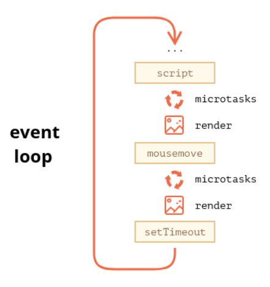

<!doctype html>
<html lang="ca" class="no-js">
  <head>
    
      <meta charset="utf-8">
      <meta name="viewport" content="width=device-width,initial-scale=1">
      
      
      
        <link rel="canonical" href="https://docencia.xaviersastre.cat/Moduls/ARXIU/2425/DWEC/promesas.html">
      
      
      
      
      <link rel="icon" href="../../../../imatges/favicon.png">
      <meta name="generator" content="mkdocs-1.5.3, mkdocs-material-9.5.9">
    
    
      
        <title>Asincronía y Promesas - Docencia Xavier</title>
      
    
    
      <link rel="stylesheet" href="../../../../assets/stylesheets/main.f2e4d321.min.css">
      
        
        <link rel="stylesheet" href="../../../../assets/stylesheets/palette.06af60db.min.css">
      
      


    
    
      
    
    
      
        
        
        <link rel="preconnect" href="https://fonts.gstatic.com" crossorigin>
        <link rel="stylesheet" href="https://fonts.googleapis.com/css?family=Roboto:300,300i,400,400i,700,700i%7CIBM+Plex+Mono:400,400i,700,700i&display=fallback">
        <style>:root{--md-text-font:"Roboto";--md-code-font:"IBM Plex Mono"}</style>
      
    
    
      <link rel="stylesheet" href="../../../../css/extra.css">
    
      <link rel="stylesheet" href="../../../../css/neoteroi-mkdocs.css">
    
    <script>__md_scope=new URL("../../../..",location),__md_hash=e=>[...e].reduce((e,_)=>(e<<5)-e+_.charCodeAt(0),0),__md_get=(e,_=localStorage,t=__md_scope)=>JSON.parse(_.getItem(t.pathname+"."+e)),__md_set=(e,_,t=localStorage,a=__md_scope)=>{try{t.setItem(a.pathname+"."+e,JSON.stringify(_))}catch(e){}}</script>
    
      
  


  
  

<script id="__analytics">function __md_analytics(){function n(){dataLayer.push(arguments)}window.dataLayer=window.dataLayer||[],n("js",new Date),n("config","G-KXJX1CP7QG"),document.addEventListener("DOMContentLoaded",function(){document.forms.search&&document.forms.search.query.addEventListener("blur",function(){this.value&&n("event","search",{search_term:this.value})}),document$.subscribe(function(){var a=document.forms.feedback;if(void 0!==a)for(var e of a.querySelectorAll("[type=submit]"))e.addEventListener("click",function(e){e.preventDefault();var t=document.location.pathname,e=this.getAttribute("data-md-value");n("event","feedback",{page:t,data:e}),a.firstElementChild.disabled=!0;e=a.querySelector(".md-feedback__note [data-md-value='"+e+"']");e&&(e.hidden=!1)}),a.hidden=!1}),location$.subscribe(function(e){n("config","G-KXJX1CP7QG",{page_path:e.pathname})})});var e=document.createElement("script");e.async=!0,e.src="https://www.googletagmanager.com/gtag/js?id=G-KXJX1CP7QG",document.getElementById("__analytics").insertAdjacentElement("afterEnd",e)}</script>
  
    <script>var consent;"undefined"==typeof __md_analytics||(consent=__md_get("__consent"))&&consent.analytics&&__md_analytics()</script>
  

    
    
    
  </head>
  
  
    
    
      
    
    
    
    
    <body dir="ltr" data-md-color-scheme="default" data-md-color-primary="blue-grey" data-md-color-accent="Teal">
  
    
    <input class="md-toggle" data-md-toggle="drawer" type="checkbox" id="__drawer" autocomplete="off">
    <input class="md-toggle" data-md-toggle="search" type="checkbox" id="__search" autocomplete="off">
    <label class="md-overlay" for="__drawer"></label>
    <div data-md-component="skip">
      
        
        <a href="#asincronia-y-promesas" class="md-skip">
          Salta el contingut
        </a>
      
    </div>
    <div data-md-component="announce">
      
    </div>
    
    
      

  

<header class="md-header md-header--shadow" data-md-component="header">
  <nav class="md-header__inner md-grid" aria-label="Capçalera">
    <a href="../../../../index.html" title="Docencia Xavier" class="md-header__button md-logo" aria-label="Docencia Xavier" data-md-component="logo">
      
  

    </a>
    <label class="md-header__button md-icon" for="__drawer">
      
      <svg xmlns="http://www.w3.org/2000/svg" viewBox="0 0 24 24"><path d="M3 6h18v2H3V6m0 5h18v2H3v-2m0 5h18v2H3v-2Z"/></svg>
    </label>
    <div class="md-header__title" data-md-component="header-title">
      <div class="md-header__ellipsis">
        <div class="md-header__topic">
          <span class="md-ellipsis">
            Docencia Xavier
          </span>
        </div>
        <div class="md-header__topic" data-md-component="header-topic">
          <span class="md-ellipsis">
            
              Asincronía y Promesas
            
          </span>
        </div>
      </div>
    </div>
    
      
        <form class="md-header__option" data-md-component="palette">
  
    
    
    
    <input class="md-option" data-md-color-media="" data-md-color-scheme="default" data-md-color-primary="blue-grey" data-md-color-accent="Teal"  aria-label="Canviar a mode nit"  type="radio" name="__palette" id="__palette_0">
    
      <label class="md-header__button md-icon" title="Canviar a mode nit" for="__palette_1" hidden>
        <svg xmlns="http://www.w3.org/2000/svg" viewBox="0 0 24 24"><path d="M17 6H7c-3.31 0-6 2.69-6 6s2.69 6 6 6h10c3.31 0 6-2.69 6-6s-2.69-6-6-6zm0 10H7c-2.21 0-4-1.79-4-4s1.79-4 4-4h10c2.21 0 4 1.79 4 4s-1.79 4-4 4zM7 9c-1.66 0-3 1.34-3 3s1.34 3 3 3 3-1.34 3-3-1.34-3-3-3z"/></svg>
      </label>
    
  
    
    
    
    <input class="md-option" data-md-color-media="" data-md-color-scheme="slate" data-md-color-primary="blue-grey" data-md-color-accent="Teal"  aria-label="Canviar a mode dia"  type="radio" name="__palette" id="__palette_1">
    
      <label class="md-header__button md-icon" title="Canviar a mode dia" for="__palette_0" hidden>
        <svg xmlns="http://www.w3.org/2000/svg" viewBox="0 0 24 24"><path d="M17 7H7a5 5 0 0 0-5 5 5 5 0 0 0 5 5h10a5 5 0 0 0 5-5 5 5 0 0 0-5-5m0 8a3 3 0 0 1-3-3 3 3 0 0 1 3-3 3 3 0 0 1 3 3 3 3 0 0 1-3 3Z"/></svg>
      </label>
    
  
</form>
      
    
    
      <script>var media,input,key,value,palette=__md_get("__palette");if(palette&&palette.color){"(prefers-color-scheme)"===palette.color.media&&(media=matchMedia("(prefers-color-scheme: light)"),input=document.querySelector(media.matches?"[data-md-color-media='(prefers-color-scheme: light)']":"[data-md-color-media='(prefers-color-scheme: dark)']"),palette.color.media=input.getAttribute("data-md-color-media"),palette.color.scheme=input.getAttribute("data-md-color-scheme"),palette.color.primary=input.getAttribute("data-md-color-primary"),palette.color.accent=input.getAttribute("data-md-color-accent"));for([key,value]of Object.entries(palette.color))document.body.setAttribute("data-md-color-"+key,value)}</script>
    
    
    
      <label class="md-header__button md-icon" for="__search">
        
        <svg xmlns="http://www.w3.org/2000/svg" viewBox="0 0 24 24"><path d="M9.5 3A6.5 6.5 0 0 1 16 9.5c0 1.61-.59 3.09-1.56 4.23l.27.27h.79l5 5-1.5 1.5-5-5v-.79l-.27-.27A6.516 6.516 0 0 1 9.5 16 6.5 6.5 0 0 1 3 9.5 6.5 6.5 0 0 1 9.5 3m0 2C7 5 5 7 5 9.5S7 14 9.5 14 14 12 14 9.5 12 5 9.5 5Z"/></svg>
      </label>
      <div class="md-search" data-md-component="search" role="dialog">
  <label class="md-search__overlay" for="__search"></label>
  <div class="md-search__inner" role="search">
    <form class="md-search__form" name="search">
      <input type="text" class="md-search__input" name="query" aria-label="Cerca" placeholder="Cerca" autocapitalize="off" autocorrect="off" autocomplete="off" spellcheck="false" data-md-component="search-query" required>
      <label class="md-search__icon md-icon" for="__search">
        
        <svg xmlns="http://www.w3.org/2000/svg" viewBox="0 0 24 24"><path d="M9.5 3A6.5 6.5 0 0 1 16 9.5c0 1.61-.59 3.09-1.56 4.23l.27.27h.79l5 5-1.5 1.5-5-5v-.79l-.27-.27A6.516 6.516 0 0 1 9.5 16 6.5 6.5 0 0 1 3 9.5 6.5 6.5 0 0 1 9.5 3m0 2C7 5 5 7 5 9.5S7 14 9.5 14 14 12 14 9.5 12 5 9.5 5Z"/></svg>
        
        <svg xmlns="http://www.w3.org/2000/svg" viewBox="0 0 24 24"><path d="M20 11v2H8l5.5 5.5-1.42 1.42L4.16 12l7.92-7.92L13.5 5.5 8 11h12Z"/></svg>
      </label>
      <nav class="md-search__options" aria-label="Cerca">
        
        <button type="reset" class="md-search__icon md-icon" title="Neteja" aria-label="Neteja" tabindex="-1">
          
          <svg xmlns="http://www.w3.org/2000/svg" viewBox="0 0 24 24"><path d="M19 6.41 17.59 5 12 10.59 6.41 5 5 6.41 10.59 12 5 17.59 6.41 19 12 13.41 17.59 19 19 17.59 13.41 12 19 6.41Z"/></svg>
        </button>
      </nav>
      
    </form>
    <div class="md-search__output">
      <div class="md-search__scrollwrap" data-md-scrollfix>
        <div class="md-search-result" data-md-component="search-result">
          <div class="md-search-result__meta">
            Inicialitzant cerca
          </div>
          <ol class="md-search-result__list" role="presentation"></ol>
        </div>
      </div>
    </div>
  </div>
</div>
    
    
  </nav>
  
</header>
    
    <div class="md-container" data-md-component="container">
      
      
        
          
        
      
      <main class="md-main" data-md-component="main">
        <div class="md-main__inner md-grid">
          
            
              
              <div class="md-sidebar md-sidebar--primary" data-md-component="sidebar" data-md-type="navigation" >
                <div class="md-sidebar__scrollwrap">
                  <div class="md-sidebar__inner">
                    


  

<nav class="md-nav md-nav--primary md-nav--integrated" aria-label="Navegació" data-md-level="0">
  <label class="md-nav__title" for="__drawer">
    <a href="../../../../index.html" title="Docencia Xavier" class="md-nav__button md-logo" aria-label="Docencia Xavier" data-md-component="logo">
      
  

    </a>
    Docencia Xavier
  </label>
  
  <ul class="md-nav__list" data-md-scrollfix>
    
      
      
  
  
  
  
    <li class="md-nav__item">
      <a href="../../../../index.html" class="md-nav__link">
        
  
  <span class="md-ellipsis">
    Inici
  </span>
  

      </a>
    </li>
  

    
      
      
  
  
  
  
    
    
    
    
    <li class="md-nav__item md-nav__item--nested">
      
        
        
        <input class="md-nav__toggle md-toggle " type="checkbox" id="__nav_2" >
        
          
          <label class="md-nav__link" for="__nav_2" id="__nav_2_label" tabindex="0">
            
  
  <span class="md-ellipsis">
    DWES
  </span>
  

            <span class="md-nav__icon md-icon"></span>
          </label>
        
        <nav class="md-nav" data-md-level="1" aria-labelledby="__nav_2_label" aria-expanded="false">
          <label class="md-nav__title" for="__nav_2">
            <span class="md-nav__icon md-icon"></span>
            DWES
          </label>
          <ul class="md-nav__list" data-md-scrollfix>
            
              
                
  
  
  
  
    
    
    
    
    <li class="md-nav__item md-nav__item--nested">
      
        
        
        <input class="md-nav__toggle md-toggle " type="checkbox" id="__nav_2_1" >
        
          
          <label class="md-nav__link" for="__nav_2_1" id="__nav_2_1_label" tabindex="0">
            
  
  <span class="md-ellipsis">
    UT01 Arquitectures Web
  </span>
  

            <span class="md-nav__icon md-icon"></span>
          </label>
        
        <nav class="md-nav" data-md-level="2" aria-labelledby="__nav_2_1_label" aria-expanded="false">
          <label class="md-nav__title" for="__nav_2_1">
            <span class="md-nav__icon md-icon"></span>
            UT01 Arquitectures Web
          </label>
          <ul class="md-nav__list" data-md-scrollfix>
            
              
                
  
  
  
  
    <li class="md-nav__item">
      <a href="../../../DWES/UT01ArquitecturesWeb.html" class="md-nav__link">
        
  
  <span class="md-ellipsis">
    Material teòric
  </span>
  

      </a>
    </li>
  

              
            
              
                
  
  
  
  
    <li class="md-nav__item">
      <a href="../../../DWES/presentacions/DWESUT01%20-%20Arquitectures%20i%20eines/index.html" class="md-nav__link">
        
  
  <span class="md-ellipsis">
    Diapositives unitat
  </span>
  

      </a>
    </li>
  

              
            
              
                
  
  
  
  
    <li class="md-nav__item">
      <a href="../../../DWES/UT01ArquitecturesWebVideo.html" class="md-nav__link">
        
  
  <span class="md-ellipsis">
    Vídeo resum de la unitat
  </span>
  

      </a>
    </li>
  

              
            
              
                
  
  
  
  
    <li class="md-nav__item">
      <a href="../../../DWES/UT01ArquitecturesWebActivitats.html" class="md-nav__link">
        
  
  <span class="md-ellipsis">
    Activitats
  </span>
  

      </a>
    </li>
  

              
            
          </ul>
        </nav>
      
    </li>
  

              
            
          </ul>
        </nav>
      
    </li>
  

    
      
      
  
  
  
  
    
    
    
    
    <li class="md-nav__item md-nav__item--nested">
      
        
        
        <input class="md-nav__toggle md-toggle " type="checkbox" id="__nav_3" >
        
          
          <label class="md-nav__link" for="__nav_3" id="__nav_3_label" tabindex="0">
            
  
  <span class="md-ellipsis">
    Blog
  </span>
  

            <span class="md-nav__icon md-icon"></span>
          </label>
        
        <nav class="md-nav" data-md-level="1" aria-labelledby="__nav_3_label" aria-expanded="false">
          <label class="md-nav__title" for="__nav_3">
            <span class="md-nav__icon md-icon"></span>
            Blog
          </label>
          <ul class="md-nav__list" data-md-scrollfix>
            
              
                
  
  
  
    
  
  
    <li class="md-nav__item">
      <a href="../../../../blog/index.html" class="md-nav__link">
        
  
  <span class="md-ellipsis">
    Bloc  <svg xmlns="http://www.w3.org/2000/svg" viewBox="0 0 24 24"><path d="M5.59 3.41 7 4.82 3.82 8 7 11.18 5.59 12.6 1 8l4.59-4.59m5.82 0L16 8l-4.59 4.6L10 11.18 13.18 8 10 4.82l1.41-1.41M22 6v12c0 1.11-.89 2-2 2H4a2 2 0 0 1-2-2v-4h2v4h16V6h-2.97V4H20c1.11 0 2 .89 2 2Z"/></svg>
  </span>
  

      </a>
    </li>
  

              
            
              
                
  
  
  
  
    
    
    
    
    <li class="md-nav__item md-nav__item--nested">
      
        
        
        <input class="md-nav__toggle md-toggle " type="checkbox" id="__nav_3_2" >
        
          
          <label class="md-nav__link" for="__nav_3_2" id="__nav_3_2_label" tabindex="0">
            
  
  <span class="md-ellipsis">
    Arxiva
  </span>
  

            <span class="md-nav__icon md-icon"></span>
          </label>
        
        <nav class="md-nav" data-md-level="2" aria-labelledby="__nav_3_2_label" aria-expanded="false">
          <label class="md-nav__title" for="__nav_3_2">
            <span class="md-nav__icon md-icon"></span>
            Arxiva
          </label>
          <ul class="md-nav__list" data-md-scrollfix>
            
              
                
  
  
  
    
  
  
    <li class="md-nav__item">
      <a href="../../../../blog/archive/2025.html" class="md-nav__link">
        
  
  <span class="md-ellipsis">
    2025
  </span>
  

      </a>
    </li>
  

              
            
              
                
  
  
  
    
  
  
    <li class="md-nav__item">
      <a href="../../../../blog/archive/2024.html" class="md-nav__link">
        
  
  <span class="md-ellipsis">
    2024
  </span>
  

      </a>
    </li>
  

              
            
          </ul>
        </nav>
      
    </li>
  

              
            
              
                
  
  
  
  
    
    
    
    
    <li class="md-nav__item md-nav__item--nested">
      
        
        
        <input class="md-nav__toggle md-toggle " type="checkbox" id="__nav_3_3" >
        
          
          <label class="md-nav__link" for="__nav_3_3" id="__nav_3_3_label" tabindex="0">
            
  
  <span class="md-ellipsis">
    Categories
  </span>
  

            <span class="md-nav__icon md-icon"></span>
          </label>
        
        <nav class="md-nav" data-md-level="2" aria-labelledby="__nav_3_3_label" aria-expanded="false">
          <label class="md-nav__title" for="__nav_3_3">
            <span class="md-nav__icon md-icon"></span>
            Categories
          </label>
          <ul class="md-nav__list" data-md-scrollfix>
            
              
                
  
  
  
    
  
  
    <li class="md-nav__item">
      <a href="../../../../blog/category/aws.html" class="md-nav__link">
        
  
  <span class="md-ellipsis">
    AWS
  </span>
  

      </a>
    </li>
  

              
            
              
                
  
  
  
    
  
  
    <li class="md-nav__item">
      <a href="../../../../blog/category/amazon.html" class="md-nav__link">
        
  
  <span class="md-ellipsis">
    Amazon
  </span>
  

      </a>
    </li>
  

              
            
              
                
  
  
  
    
  
  
    <li class="md-nav__item">
      <a href="../../../../blog/category/coneixements-generals.html" class="md-nav__link">
        
  
  <span class="md-ellipsis">
    Coneixements generals
  </span>
  

      </a>
    </li>
  

              
            
              
                
  
  
  
    
  
  
    <li class="md-nav__item">
      <a href="../../../../blog/category/dam.html" class="md-nav__link">
        
  
  <span class="md-ellipsis">
    DAM
  </span>
  

      </a>
    </li>
  

              
            
              
                
  
  
  
    
  
  
    <li class="md-nav__item">
      <a href="../../../../blog/category/daw.html" class="md-nav__link">
        
  
  <span class="md-ellipsis">
    DAW
  </span>
  

      </a>
    </li>
  

              
            
              
                
  
  
  
    
  
  
    <li class="md-nav__item">
      <a href="../../../../blog/category/dwec.html" class="md-nav__link">
        
  
  <span class="md-ellipsis">
    DWEC
  </span>
  

      </a>
    </li>
  

              
            
              
                
  
  
  
    
  
  
    <li class="md-nav__item">
      <a href="../../../../blog/category/dwes.html" class="md-nav__link">
        
  
  <span class="md-ellipsis">
    DWES
  </span>
  

      </a>
    </li>
  

              
            
              
                
  
  
  
    
  
  
    <li class="md-nav__item">
      <a href="../../../../blog/category/docker.html" class="md-nav__link">
        
  
  <span class="md-ellipsis">
    Docker
  </span>
  

      </a>
    </li>
  

              
            
              
                
  
  
  
    
  
  
    <li class="md-nav__item">
      <a href="../../../../blog/category/dynamodb.html" class="md-nav__link">
        
  
  <span class="md-ellipsis">
    DynamoDB
  </span>
  

      </a>
    </li>
  

              
            
              
                
  
  
  
    
  
  
    <li class="md-nav__item">
      <a href="../../../../blog/category/general.html" class="md-nav__link">
        
  
  <span class="md-ellipsis">
    General
  </span>
  

      </a>
    </li>
  

              
            
              
                
  
  
  
    
  
  
    <li class="md-nav__item">
      <a href="../../../../blog/category/html.html" class="md-nav__link">
        
  
  <span class="md-ellipsis">
    HTML
  </span>
  

      </a>
    </li>
  

              
            
              
                
  
  
  
    
  
  
    <li class="md-nav__item">
      <a href="../../../../blog/category/js.html" class="md-nav__link">
        
  
  <span class="md-ellipsis">
    JS
  </span>
  

      </a>
    </li>
  

              
            
              
                
  
  
  
    
  
  
    <li class="md-nav__item">
      <a href="../../../../blog/category/java.html" class="md-nav__link">
        
  
  <span class="md-ellipsis">
    Java
  </span>
  

      </a>
    </li>
  

              
            
              
                
  
  
  
    
  
  
    <li class="md-nav__item">
      <a href="../../../../blog/category/javascript.html" class="md-nav__link">
        
  
  <span class="md-ellipsis">
    Javascript
  </span>
  

      </a>
    </li>
  

              
            
              
                
  
  
  
    
  
  
    <li class="md-nav__item">
      <a href="../../../../blog/category/matem%C3%A0tiques.html" class="md-nav__link">
        
  
  <span class="md-ellipsis">
    Matemàtiques
  </span>
  

      </a>
    </li>
  

              
            
              
                
  
  
  
    
  
  
    <li class="md-nav__item">
      <a href="../../../../blog/category/php.html" class="md-nav__link">
        
  
  <span class="md-ellipsis">
    PHP
  </span>
  

      </a>
    </li>
  

              
            
              
                
  
  
  
    
  
  
    <li class="md-nav__item">
      <a href="../../../../blog/category/psp.html" class="md-nav__link">
        
  
  <span class="md-ellipsis">
    PSP
  </span>
  

      </a>
    </li>
  

              
            
              
                
  
  
  
    
  
  
    <li class="md-nav__item">
      <a href="../../../../blog/category/programaci%C3%B3.html" class="md-nav__link">
        
  
  <span class="md-ellipsis">
    Programació
  </span>
  

      </a>
    </li>
  

              
            
              
                
  
  
  
    
  
  
    <li class="md-nav__item">
      <a href="../../../../blog/category/programci%C3%B3-multifil.html" class="md-nav__link">
        
  
  <span class="md-ellipsis">
    Programció multifil
  </span>
  

      </a>
    </li>
  

              
            
              
                
  
  
  
    
  
  
    <li class="md-nav__item">
      <a href="../../../../blog/category/projecte-intermodular.html" class="md-nav__link">
        
  
  <span class="md-ellipsis">
    Projecte intermodular
  </span>
  

      </a>
    </li>
  

              
            
              
                
  
  
  
    
  
  
    <li class="md-nav__item">
      <a href="../../../../blog/category/springboot.html" class="md-nav__link">
        
  
  <span class="md-ellipsis">
    SpringBoot
  </span>
  

      </a>
    </li>
  

              
            
          </ul>
        </nav>
      
    </li>
  

              
            
          </ul>
        </nav>
      
    </li>
  

    
  </ul>
</nav>
                  </div>
                </div>
              </div>
            
            
          
          
            <div class="md-content" data-md-component="content">
              <article class="md-content__inner md-typeset">
                
                  


<h1 id="asincronia-y-promesas">Asincronía y Promesas<a class="headerlink" href="#asincronia-y-promesas" title="Permanent link">&para;</a></h1>
<p>Antes de estudiar las promesas, vamos a repasar algunos conceptos sobre cómo funciona internamente el motor de javascript. De esta manera será más fácil entender cómo funcionan las promesas y cómo usarlas. </p>
<h2 id="el-motor-de-javascript">El Motor de JavaScript<a class="headerlink" href="#el-motor-de-javascript" title="Permanent link">&para;</a></h2>
<p>El motor de JavaScript dentro del navegador es responsable de compilar y ejecutar el código JavaScript, manejar la pila de funciones (call stack), gestionar el alojamiento de los objetos en memoria (heap) y recolectar la basura de los objetos que ya no se necesitan. Además, proporciona una API con utilidades del navegador, red, funciones asíncronas y más. En este capítulo, exploraremos cómo funciona el motor de JavaScript, incluyendo la ejecución de código síncrono y asíncrono, y los conceptos de contexto de ejecución y pila de llamadas.</p>
<h3 id="entorno-de-ejecucion">Entorno de Ejecución<a class="headerlink" href="#entorno-de-ejecucion" title="Permanent link">&para;</a></h3>
<p>JavaScript solo puede tener un hilo de ejecución (en principio). Esto significa que si solicitamos algo al servidor de forma síncrona, toda la web se detendrá hasta que llegue la respuesta. Sin embargo, los navegadores tienen un entorno de ejecución que permite que JavaScript realice solicitudes de forma asíncrona y continúe ejecutando otras tareas. Estas peticiones asíncronas las proporciona las <code>web APIs</code> y sus respuestas pueden ser gestionadas mediante Callbacks, Promesas o Async/Await. Para entender cómo funcionan las peticiones asíncronas en JavaScript, es fundamental comprender los conceptos de Contexto de Ejecución y Pila de Llamadas.</p>
<h4 id="contexto-de-ejecucion-y-pila-de-llamadas">Contexto de Ejecución y Pila de Llamadas<a class="headerlink" href="#contexto-de-ejecucion-y-pila-de-llamadas" title="Permanent link">&para;</a></h4>
<h5 id="contexto-de-ejecucion">Contexto de Ejecución<a class="headerlink" href="#contexto-de-ejecucion" title="Permanent link">&para;</a></h5>
<p>El contexto de ejecución es el entorno en el cual JavaScript se evalúa y ejecuta. Cada vez que se ejecuta un script o se llama a una función, se crea un nuevo contexto de ejecución. Existen dos tipos principales de contextos de ejecución: el contexto global y el contexto de función.</p>
<h6 id="contexto-de-ejecucion-global">Contexto de Ejecución Global<a class="headerlink" href="#contexto-de-ejecucion-global" title="Permanent link">&para;</a></h6>
<p>El contexto de ejecución global se crea cuando se carga una página web o un archivo JavaScript en un entorno de ejecución, como un navegador o Node.js. Este contexto es el entorno predeterminado en el que se evalúa y ejecuta el código global, es decir, cualquier código que no esté dentro de una función.</p>
<div class="highlight"><pre><span></span><code><span class="linenos" data-linenos="1 "></span><span class="p">(()=&gt;{</span>
<span class="linenos" data-linenos="2 "></span><span class="kd">let</span><span class="w"> </span><span class="nx">globalVar</span><span class="w"> </span><span class="o">=</span><span class="w"> </span><span class="s2">&quot;I am global&quot;</span><span class="p">;</span>
<span class="linenos" data-linenos="3 "></span>
<span class="linenos" data-linenos="4 "></span><span class="kd">function</span><span class="w"> </span><span class="nx">showGlobalVar</span><span class="p">()</span><span class="w"> </span><span class="p">{</span>
<span class="linenos" data-linenos="5 "></span><span class="w">  </span><span class="nx">console</span><span class="p">.</span><span class="nx">log</span><span class="p">(</span><span class="nx">globalVar</span><span class="p">);</span><span class="w"> </span><span class="c1">// Puede acceder a globalVar porque está en el contexto global</span>
<span class="linenos" data-linenos="6 "></span><span class="p">}</span>
<span class="linenos" data-linenos="7 "></span>
<span class="linenos" data-linenos="8 "></span><span class="nx">showGlobalVar</span><span class="p">();</span><span class="w"> </span><span class="c1">// I am global</span>
<span class="linenos" data-linenos="9 "></span><span class="p">})()</span>
</code></pre></div>
<div class="highlight"><pre><span></span><code><span class="linenos" data-linenos="1 "></span>I am global
</code></pre></div>
<p>En este ejemplo, <code>globalVar</code> se define en el contexto global, y la función <code>showGlobalVar</code> puede acceder a <code>globalVar</code> porque también se encuentra en el contexto global.</p>
<h6 id="contexto-de-ejecucion-de-funcion">Contexto de Ejecución de Función<a class="headerlink" href="#contexto-de-ejecucion-de-funcion" title="Permanent link">&para;</a></h6>
<p>Cada vez que se llama a una función, se crea un nuevo contexto de ejecución para esa función. Este contexto de ejecución incluye el ámbito léxico de la función, el objeto <code>this</code>, y una referencia al contexto de ejecución de su entorno exterior (si lo hay).</p>
<div class="highlight"><pre><span></span><code><span class="linenos" data-linenos=" 1 "></span><span class="p">(()=&gt;{</span>
<span class="linenos" data-linenos=" 2 "></span><span class="kd">let</span><span class="w"> </span><span class="nx">globalVar</span><span class="w"> </span><span class="o">=</span><span class="w"> </span><span class="s2">&quot;I am global&quot;</span><span class="p">;</span>
<span class="linenos" data-linenos=" 3 "></span>
<span class="linenos" data-linenos=" 4 "></span><span class="kd">function</span><span class="w"> </span><span class="nx">outerFunction</span><span class="p">()</span><span class="w"> </span><span class="p">{</span>
<span class="linenos" data-linenos=" 5 "></span><span class="w">  </span><span class="kd">let</span><span class="w"> </span><span class="nx">outerVar</span><span class="w"> </span><span class="o">=</span><span class="w"> </span><span class="s2">&quot;I am outer&quot;</span><span class="p">;</span>
<span class="linenos" data-linenos=" 6 "></span>
<span class="linenos" data-linenos=" 7 "></span><span class="w">  </span><span class="kd">function</span><span class="w"> </span><span class="nx">innerFunction</span><span class="p">()</span><span class="w"> </span><span class="p">{</span>
<span class="linenos" data-linenos=" 8 "></span><span class="w">    </span><span class="kd">let</span><span class="w"> </span><span class="nx">innerVar</span><span class="w"> </span><span class="o">=</span><span class="w"> </span><span class="s2">&quot;I am inner&quot;</span><span class="p">;</span>
<span class="linenos" data-linenos=" 9 "></span><span class="w">    </span><span class="nx">console</span><span class="p">.</span><span class="nx">log</span><span class="p">(</span><span class="nx">globalVar</span><span class="p">);</span><span class="w"> </span><span class="c1">// I am global</span>
<span class="linenos" data-linenos="10 "></span><span class="w">    </span><span class="nx">console</span><span class="p">.</span><span class="nx">log</span><span class="p">(</span><span class="nx">outerVar</span><span class="p">);</span><span class="w">  </span><span class="c1">// I am outer</span>
<span class="linenos" data-linenos="11 "></span><span class="w">    </span><span class="nx">console</span><span class="p">.</span><span class="nx">log</span><span class="p">(</span><span class="nx">innerVar</span><span class="p">);</span><span class="w">  </span><span class="c1">// I am inner</span>
<span class="linenos" data-linenos="12 "></span><span class="w">  </span><span class="p">}</span>
<span class="linenos" data-linenos="13 "></span>
<span class="linenos" data-linenos="14 "></span><span class="w">  </span><span class="nx">innerFunction</span><span class="p">();</span>
<span class="linenos" data-linenos="15 "></span><span class="p">}</span>
<span class="linenos" data-linenos="16 "></span>
<span class="linenos" data-linenos="17 "></span><span class="nx">outerFunction</span><span class="p">();</span>
<span class="linenos" data-linenos="18 "></span><span class="p">})();</span>
</code></pre></div>
<div class="highlight"><pre><span></span><code><span class="linenos" data-linenos="1 "></span>I am global
<span class="linenos" data-linenos="2 "></span>I am outer
<span class="linenos" data-linenos="3 "></span>I am inner
</code></pre></div>
<p>En este ejemplo, <code>outerFunction</code> crea su propio contexto de ejecución que incluye <code>outerVar</code>. Cuando <code>innerFunction</code> se llama, se crea un nuevo contexto de ejecución que incluye <code>innerVar</code>. <code>innerFunction</code> también tiene acceso a <code>outerVar</code> y <code>globalVar</code> debido a la cadena de ámbito léxico.</p>
<h5 id="pila-de-llamadas-call-stack">Pila de Llamadas (Call Stack)<a class="headerlink" href="#pila-de-llamadas-call-stack" title="Permanent link">&para;</a></h5>
<p>La pila de llamadas es una estructura de datos LIFO (Last In, First Out) que almacena los contextos de ejecución en el orden en que deben ejecutarse. Cada vez que se llama a una función, su contexto de ejecución se agrega a la pila de llamadas. Cuando la función termina, su contexto se elimina de la pila.</p>
<div class="highlight"><pre><span></span><code><span class="linenos" data-linenos=" 1 "></span><span class="p">(()=&gt;{</span>
<span class="linenos" data-linenos=" 2 "></span><span class="w">    </span><span class="kd">function</span><span class="w"> </span><span class="nx">first</span><span class="p">()</span><span class="w"> </span><span class="p">{</span>
<span class="linenos" data-linenos=" 3 "></span><span class="w">      </span><span class="nx">console</span><span class="p">.</span><span class="nx">log</span><span class="p">(</span><span class="s2">&quot;Entering first&quot;</span><span class="p">);</span>
<span class="linenos" data-linenos=" 4 "></span><span class="w">      </span><span class="nx">second</span><span class="p">();</span>
<span class="linenos" data-linenos=" 5 "></span><span class="w">      </span><span class="nx">console</span><span class="p">.</span><span class="nx">log</span><span class="p">(</span><span class="s2">&quot;Exiting first&quot;</span><span class="p">);</span>
<span class="linenos" data-linenos=" 6 "></span><span class="w">    </span><span class="p">}</span>
<span class="linenos" data-linenos=" 7 "></span>
<span class="linenos" data-linenos=" 8 "></span><span class="w">    </span><span class="kd">function</span><span class="w"> </span><span class="nx">second</span><span class="p">()</span><span class="w"> </span><span class="p">{</span>
<span class="linenos" data-linenos=" 9 "></span><span class="w">      </span><span class="nx">console</span><span class="p">.</span><span class="nx">log</span><span class="p">(</span><span class="s2">&quot;Entering second&quot;</span><span class="p">);</span>
<span class="linenos" data-linenos="10 "></span><span class="w">      </span><span class="nx">third</span><span class="p">();</span>
<span class="linenos" data-linenos="11 "></span><span class="w">      </span><span class="nx">console</span><span class="p">.</span><span class="nx">log</span><span class="p">(</span><span class="s2">&quot;Exiting second&quot;</span><span class="p">);</span>
<span class="linenos" data-linenos="12 "></span><span class="w">    </span><span class="p">}</span>
<span class="linenos" data-linenos="13 "></span>
<span class="linenos" data-linenos="14 "></span><span class="w">    </span><span class="kd">function</span><span class="w"> </span><span class="nx">third</span><span class="p">()</span><span class="w"> </span><span class="p">{</span>
<span class="linenos" data-linenos="15 "></span><span class="w">      </span><span class="nx">console</span><span class="p">.</span><span class="nx">log</span><span class="p">(</span><span class="s2">&quot;Entering third&quot;</span><span class="p">);</span>
<span class="linenos" data-linenos="16 "></span><span class="w">      </span><span class="c1">// Realiza alguna tarea</span>
<span class="linenos" data-linenos="17 "></span><span class="w">      </span><span class="nx">console</span><span class="p">.</span><span class="nx">log</span><span class="p">(</span><span class="s2">&quot;Exiting third&quot;</span><span class="p">);</span>
<span class="linenos" data-linenos="18 "></span><span class="w">    </span><span class="p">}</span>
<span class="linenos" data-linenos="19 "></span>
<span class="linenos" data-linenos="20 "></span><span class="w">    </span><span class="nx">first</span><span class="p">();</span>
<span class="linenos" data-linenos="21 "></span><span class="w">    </span><span class="p">})();</span>
</code></pre></div>
<div class="highlight"><pre><span></span><code><span class="linenos" data-linenos="1 "></span>Entering first
<span class="linenos" data-linenos="2 "></span>Entering second
<span class="linenos" data-linenos="3 "></span>Entering third
<span class="linenos" data-linenos="4 "></span>Exiting third
<span class="linenos" data-linenos="5 "></span>Exiting second
<span class="linenos" data-linenos="6 "></span>Exiting first
</code></pre></div>
<p><strong>Análisis del Call Stack:</strong></p>
<ol>
<li><code>first()</code> se agrega a la pila de llamadas.</li>
<li><code>console.log("Entering first")</code> se ejecuta dentro de <code>first()</code>.</li>
<li><code>second()</code> se agrega a la pila de llamadas.</li>
<li><code>console.log("Entering second")</code> se ejecuta dentro de <code>second()</code>.</li>
<li><code>third()</code> se agrega a la pila de llamadas.</li>
<li><code>console.log("Entering third")</code> se ejecuta dentro de <code>third()</code>.</li>
<li><code>console.log("Exiting third")</code> se ejecuta dentro de <code>third()</code>.</li>
<li><code>third()</code> se elimina de la pila de llamadas.</li>
<li><code>console.log("Exiting second")</code> se ejecuta dentro de <code>second()</code>.</li>
<li><code>second()</code> se elimina de la pila de llamadas.</li>
<li><code>console.log("Exiting first")</code> se ejecuta dentro de <code>first()</code>.</li>
<li><code>first()</code> se elimina de la pila de llamadas.</li>
</ol>
<h6 id="herramientas-para-analizar-el-call-stack">Herramientas para Analizar el Call Stack<a class="headerlink" href="#herramientas-para-analizar-el-call-stack" title="Permanent link">&para;</a></h6>
<p>En Firefox:</p>
<ol>
<li>Presiona <code>F12</code> para abrir las herramientas de desarrollo.</li>
<li>Ve al panel de Depurador.</li>
<li>Coloca un punto de ruptura.</li>
<li>Ejecuta y analiza la pila de llamadas y el entorno de ejecución de las funciones.</li>
</ol>
<p>También puedes usar <code>console.trace()</code> y <code>debugger;</code> en tu código para depurar y analizar el flujo de ejecución.</p>
<h4 id="tareas-y-microtareas">Tareas y Microtareas<a class="headerlink" href="#tareas-y-microtareas" title="Permanent link">&para;</a></h4>
<p>JavaScript gestiona las operaciones asíncronas utilizando varias colas de tareas, cada una con una prioridad diferente. Estas colas incluyen la <strong>cola de macrotareas</strong> y la <strong>cola de microtareas</strong>.</p>
<h5 id="cola-de-macrotareas-y-microtareas">Cola de Macrotareas y Microtareas<a class="headerlink" href="#cola-de-macrotareas-y-microtareas" title="Permanent link">&para;</a></h5>
<p></p>
<p>Las <strong>macrotareas</strong> incluyen operaciones como los eventos del DOM, <code>setTimeout</code>, <code>setInterval</code> y otras operaciones asíncronas. Las macrotareas se gestionan en la "cola de macrotareas" y se procesan una por una.</p>
<p>Las <strong>microtareas</strong>, por otro lado, incluyen las promesas (<code>Promises</code>) y las mutaciones del DOM (a través de <code>MutationObserver</code>). Estas tareas se gestionan en la "cola de microtareas", que tiene una prioridad más alta que la de las macrotareas. Esto significa que después de cada macrotarea, el motor de JavaScript procesará todas las microtareas antes de continuar con la siguiente macrotarea.</p>
<p>Cuando se completa una macrotarea, el motor de JavaScript pasa a procesar todas las microtareas pendientes. Este ciclo de procesamiento asegura que las microtareas reciban atención inmediata después de cada macrotarea.</p>
<div class="highlight"><pre><span></span><code><span class="linenos" data-linenos=" 1 "></span><span class="p">(()=&gt;{</span>
<span class="linenos" data-linenos=" 2 "></span><span class="kd">let</span><span class="w"> </span><span class="nx">start</span><span class="w"> </span><span class="o">=</span><span class="w"> </span><span class="nb">Date</span><span class="p">.</span><span class="nx">now</span><span class="p">();</span>
<span class="linenos" data-linenos=" 3 "></span>
<span class="linenos" data-linenos=" 4 "></span><span class="kd">function</span><span class="w"> </span><span class="nx">count</span><span class="p">()</span><span class="w"> </span><span class="p">{</span>
<span class="linenos" data-linenos=" 5 "></span><span class="w">  </span><span class="c1">// Trabajo pesado</span>
<span class="linenos" data-linenos=" 6 "></span><span class="w">  </span><span class="kd">let</span><span class="w"> </span><span class="nx">i</span><span class="w"> </span><span class="o">=</span><span class="w"> </span><span class="mf">0</span><span class="p">;</span>
<span class="linenos" data-linenos=" 7 "></span><span class="w">  </span><span class="k">for</span><span class="w"> </span><span class="p">(</span><span class="kd">let</span><span class="w"> </span><span class="nx">j</span><span class="w"> </span><span class="o">=</span><span class="w"> </span><span class="mf">0</span><span class="p">;</span><span class="w"> </span><span class="nx">j</span><span class="w"> </span><span class="o">&lt;</span><span class="w"> </span><span class="mf">1e9</span><span class="p">;</span><span class="w"> </span><span class="nx">j</span><span class="o">++</span><span class="p">)</span><span class="w"> </span><span class="p">{</span>
<span class="linenos" data-linenos=" 8 "></span><span class="w">    </span><span class="nx">i</span><span class="o">++</span><span class="p">;</span>
<span class="linenos" data-linenos=" 9 "></span><span class="w">  </span><span class="p">}</span>
<span class="linenos" data-linenos="10 "></span><span class="w">  </span><span class="nx">console</span><span class="p">.</span><span class="nx">log</span><span class="p">(</span><span class="s2">&quot;Done in &quot;</span><span class="w"> </span><span class="o">+</span><span class="w"> </span><span class="p">(</span><span class="nb">Date</span><span class="p">.</span><span class="nx">now</span><span class="p">()</span><span class="w"> </span><span class="o">-</span><span class="w"> </span><span class="nx">start</span><span class="p">)</span><span class="w"> </span><span class="o">+</span><span class="w"> </span><span class="s1">&#39;ms&#39;</span><span class="p">);</span>
<span class="linenos" data-linenos="11 "></span><span class="p">}</span>
<span class="linenos" data-linenos="12 "></span>
<span class="linenos" data-linenos="13 "></span><span class="c1">// count();   // Esto bloquea el navegador</span>
<span class="linenos" data-linenos="14 "></span><span class="nx">setTimeout</span><span class="p">(</span><span class="nx">count</span><span class="p">,</span><span class="w"> </span><span class="mf">0</span><span class="p">);</span>
<span class="linenos" data-linenos="15 "></span><span class="p">})();</span>
</code></pre></div>
<ol>
<li>La función <code>count</code> ejecuta una operación costosa (una larga iteración de bucle).</li>
<li>Si <code>count</code> se ejecuta directamente, bloquea el navegador porque el bucle es muy largo.</li>
<li>Utilizando <code>setTimeout(count, 0)</code>, la función <code>count</code> se coloca en la cola de macrotareas, permitiendo que el navegador procese otras tareas mientras tanto.</li>
</ol>
<p>Este ejemplo ilustra cómo retrasar el bloqueo hasta que, por ejemplo, se ejecute todo el programa principal. Pero no soluciona el hecho de que, al final se va a quedar el navegador bloqueado, ya que se ejecutará en el único hilo de ejecución de Javascript. Si queremos tener más hilos, podemos usar <code>worker</code>. En el siguiente ejemplo se ve cómo dividir el trabajo para que, en medio, dé tiempo a renderizar o ejecutar otras tareas y microtareas como atender eventos:</p>
<h5 id="ejemplo-de-dividir-el-trabajo-con-settimeout">Ejemplo de Dividir el Trabajo con <code>setTimeout</code><a class="headerlink" href="#ejemplo-de-dividir-el-trabajo-con-settimeout" title="Permanent link">&para;</a></h5>
<div class="highlight"><pre><span></span><code><span class="linenos" data-linenos=" 1 "></span><span class="nb">document</span><span class="p">.</span><span class="nx">addEventListener</span><span class="p">(</span><span class="s2">&quot;DOMContentLoaded&quot;</span><span class="p">,</span><span class="w"> </span><span class="p">()</span><span class="w"> </span><span class="p">=&gt;</span><span class="w"> </span><span class="p">{</span>
<span class="linenos" data-linenos=" 2 "></span><span class="w">  </span><span class="kd">let</span><span class="w"> </span><span class="nx">progress</span><span class="w"> </span><span class="o">=</span><span class="w"> </span><span class="nb">document</span><span class="p">.</span><span class="nx">querySelector</span><span class="p">(</span><span class="s2">&quot;#progress&quot;</span><span class="p">);</span>
<span class="linenos" data-linenos=" 3 "></span><span class="w">  </span><span class="kd">let</span><span class="w"> </span><span class="nx">i</span><span class="w"> </span><span class="o">=</span><span class="w"> </span><span class="mf">0</span><span class="p">;</span>
<span class="linenos" data-linenos=" 4 "></span><span class="w">  </span><span class="kd">function</span><span class="w"> </span><span class="nx">count</span><span class="p">()</span><span class="w"> </span><span class="p">{</span>
<span class="linenos" data-linenos=" 5 "></span><span class="w">    </span><span class="c1">// Realiza una parte del trabajo pesado (*)</span>
<span class="linenos" data-linenos=" 6 "></span><span class="w">    </span><span class="k">do</span><span class="w"> </span><span class="p">{</span>
<span class="linenos" data-linenos=" 7 "></span><span class="w">      </span><span class="nx">i</span><span class="o">++</span><span class="p">;</span>
<span class="linenos" data-linenos=" 8 "></span><span class="w">      </span><span class="nx">progress</span><span class="p">.</span><span class="nx">innerHTML</span><span class="w"> </span><span class="o">=</span><span class="w"> </span><span class="nx">i</span><span class="p">;</span>
<span class="linenos" data-linenos=" 9 "></span><span class="w">    </span><span class="p">}</span><span class="w"> </span><span class="k">while</span><span class="w"> </span><span class="p">(</span><span class="nx">i</span><span class="w"> </span><span class="o">%</span><span class="w"> </span><span class="mf">1e3</span><span class="w"> </span><span class="o">!=</span><span class="w"> </span><span class="mf">0</span><span class="p">);</span>
<span class="linenos" data-linenos="10 "></span>
<span class="linenos" data-linenos="11 "></span><span class="w">    </span><span class="k">if</span><span class="w"> </span><span class="p">(</span><span class="nx">i</span><span class="w"> </span><span class="o">&lt;</span><span class="w"> </span><span class="mf">1e7</span><span class="p">)</span><span class="w"> </span><span class="p">{</span>
<span class="linenos" data-linenos="12 "></span><span class="w">      </span><span class="nx">setTimeout</span><span class="p">(</span><span class="nx">count</span><span class="p">);</span>
<span class="linenos" data-linenos="13 "></span><span class="w">    </span><span class="p">}</span>
<span class="linenos" data-linenos="14 "></span><span class="w">  </span><span class="p">}</span>
<span class="linenos" data-linenos="15 "></span><span class="w">  </span><span class="nx">count</span><span class="p">();</span>
<span class="linenos" data-linenos="16 "></span><span class="p">});</span>
</code></pre></div>
<ol>
<li>En lugar de hacer todo el trabajo pesado en una única ejecución, el trabajo se divide en trozos más pequeños.</li>
<li>La función <code>count</code> realiza una pequeña parte del trabajo (incrementar <code>i</code> y actualizar el texto de <code>progress</code>) antes de ceder el control al navegador con <code>setTimeout(count)</code>.</li>
<li>Esto permite que el navegador renderice el cambio en el DOM, evitando el bloqueo y ofreciendo una experiencia de usuario más fluida.</li>
</ol>
<h5 id="codigo-de-ejemplo-con-promesas-microtareas">Código de Ejemplo con Promesas (Microtareas)<a class="headerlink" href="#codigo-de-ejemplo-con-promesas-microtareas" title="Permanent link">&para;</a></h5>
<div class="highlight"><pre><span></span><code><span class="linenos" data-linenos=" 1 "></span><span class="p">(()=&gt;{</span>
<span class="linenos" data-linenos=" 2 "></span><span class="w">  </span><span class="kd">const</span><span class="w"> </span><span class="nx">messages</span><span class="w"> </span><span class="o">=</span><span class="w"> </span><span class="p">[];</span>
<span class="linenos" data-linenos=" 3 "></span><span class="w">  </span><span class="nx">messages</span><span class="p">.</span><span class="nx">push</span><span class="p">(</span><span class="s1">&#39;Script start&#39;</span><span class="p">);</span>
<span class="linenos" data-linenos=" 4 "></span><span class="w">  </span><span class="nx">setTimeout</span><span class="p">(()</span><span class="w"> </span><span class="p">=&gt;</span><span class="w"> </span><span class="p">{</span>
<span class="linenos" data-linenos=" 5 "></span><span class="w">    </span><span class="nx">messages</span><span class="p">.</span><span class="nx">push</span><span class="p">(</span><span class="s1">&#39;SetTimeout&#39;</span><span class="p">);</span>
<span class="linenos" data-linenos=" 6 "></span><span class="w">    </span><span class="nx">printMessages</span><span class="p">();</span>
<span class="linenos" data-linenos=" 7 "></span><span class="w">  </span><span class="p">},</span><span class="w"> </span><span class="mf">0</span><span class="p">);</span>
<span class="linenos" data-linenos=" 8 "></span><span class="w">  </span><span class="nb">Promise</span><span class="p">.</span><span class="nx">resolve</span><span class="p">().</span><span class="nx">then</span><span class="p">(()</span><span class="w"> </span><span class="p">=&gt;</span><span class="w"> </span><span class="p">{</span>
<span class="linenos" data-linenos=" 9 "></span><span class="w">    </span><span class="nx">messages</span><span class="p">.</span><span class="nx">push</span><span class="p">(</span><span class="s1">&#39;Promise 1&#39;</span><span class="p">);</span>
<span class="linenos" data-linenos="10 "></span><span class="w">  </span><span class="p">}).</span><span class="nx">then</span><span class="p">(()</span><span class="w"> </span><span class="p">=&gt;</span><span class="w"> </span><span class="p">{</span>
<span class="linenos" data-linenos="11 "></span><span class="w">    </span><span class="nx">messages</span><span class="p">.</span><span class="nx">push</span><span class="p">(</span><span class="s1">&#39;Promise 2&#39;</span><span class="p">);</span>
<span class="linenos" data-linenos="12 "></span><span class="w">  </span><span class="p">});</span>
<span class="linenos" data-linenos="13 "></span><span class="w">  </span><span class="nx">messages</span><span class="p">.</span><span class="nx">push</span><span class="p">(</span><span class="s1">&#39;Script end&#39;</span><span class="p">);</span>
<span class="linenos" data-linenos="14 "></span><span class="w">  </span><span class="kd">function</span><span class="w"> </span><span class="nx">printMessages</span><span class="p">()</span><span class="w"> </span><span class="p">{</span>
<span class="linenos" data-linenos="15 "></span><span class="w">      </span><span class="nx">console</span><span class="p">.</span><span class="nx">log</span><span class="p">(</span><span class="nx">messages</span><span class="p">.</span><span class="nx">join</span><span class="p">(</span><span class="s1">&#39;\n&#39;</span><span class="p">));</span>
<span class="linenos" data-linenos="16 "></span><span class="w">  </span><span class="p">}</span>
<span class="linenos" data-linenos="17 "></span><span class="p">})();</span>
</code></pre></div>
<div class="highlight"><pre><span></span><code><span class="linenos" data-linenos="1 "></span>Done in 735ms
<span class="linenos" data-linenos="2 "></span>Script start
<span class="linenos" data-linenos="3 "></span>Script end
<span class="linenos" data-linenos="4 "></span>Promise 1
<span class="linenos" data-linenos="5 "></span>Promise 2
<span class="linenos" data-linenos="6 "></span>SetTimeout
</code></pre></div>
<ol>
<li>El log 'Script start' se imprime primero porque es código síncrono.</li>
<li><code>setTimeout</code> coloca su función de callback en la cola de macrotareas.</li>
<li>La promesa se resuelve inmediatamente, colocando sus callbacks en la cola de microtareas.</li>
<li>El log 'Script end' se imprime porque es código síncrono.</li>
<li>Las microtareas (las promesas) se ejecutan antes de la macrotarea (<code>setTimeout</code>), imprimiendo 'Promise 1' y 'Promise 2'.</li>
<li>Finalmente, la función de <code>setTimeout</code> se ejecuta, imprimiendo 'SetTimeout'.</li>
</ol>
<p>Este mecanismo de tareas y microtareas permite que JavaScript gestione de manera eficiente las operaciones asíncronas, asegurando que el código se ejecute de manera ordenada y que las tareas con mayor prioridad (microtareas) se completen antes de procesar tareas menos prioritarias (macrotareas).</p>
<h2 id="callbacks-en-javascript">Callbacks en JavaScript<a class="headerlink" href="#callbacks-en-javascript" title="Permanent link">&para;</a></h2>
<p>En JavaScript, un callback es una función que se pasa como argumento a otra función para que se ejecute después de que se complete alguna operación. Los callbacks son esenciales para manejar operaciones asíncronas como la comunicación con servidores, temporizadores, y eventos del DOM.
El propio lenguaje Javascript cuenta con multitud de funciones que aceptan funciones de callback, com forEach, map, filter, addEventListener... </p>
<div class="highlight"><pre><span></span><code><span class="linenos" data-linenos=" 1 "></span><span class="p">(()=&gt;{</span>
<span class="linenos" data-linenos=" 2 "></span><span class="kd">function</span><span class="w"> </span><span class="nx">fetchData</span><span class="p">(</span><span class="nx">callback</span><span class="p">)</span><span class="w"> </span><span class="p">{</span>
<span class="linenos" data-linenos=" 3 "></span><span class="w">  </span><span class="nx">setTimeout</span><span class="p">(()</span><span class="w"> </span><span class="p">=&gt;</span><span class="w"> </span><span class="p">{</span>
<span class="linenos" data-linenos=" 4 "></span><span class="w">    </span><span class="kd">const</span><span class="w"> </span><span class="nx">data</span><span class="w"> </span><span class="o">=</span><span class="w"> </span><span class="p">{</span><span class="w"> </span><span class="nx">name</span><span class="o">:</span><span class="w"> </span><span class="s2">&quot;John&quot;</span><span class="p">,</span><span class="w"> </span><span class="nx">age</span><span class="o">:</span><span class="w"> </span><span class="kt">30</span><span class="w"> </span><span class="p">};</span>
<span class="linenos" data-linenos=" 5 "></span><span class="w">    </span><span class="nx">callback</span><span class="p">(</span><span class="nx">data</span><span class="p">);</span>
<span class="linenos" data-linenos=" 6 "></span><span class="w">  </span><span class="p">},</span><span class="w"> </span><span class="mf">3000</span><span class="p">);</span>
<span class="linenos" data-linenos=" 7 "></span><span class="p">}</span>
<span class="linenos" data-linenos=" 8 "></span>
<span class="linenos" data-linenos=" 9 "></span><span class="c1">// Ejecutar la función con un callback</span>
<span class="linenos" data-linenos="10 "></span><span class="nx">fetchData</span><span class="p">(</span><span class="kd">function</span><span class="p">(</span><span class="nx">data</span><span class="p">)</span><span class="w"> </span><span class="p">{</span>
<span class="linenos" data-linenos="11 "></span><span class="w">  </span><span class="nx">console</span><span class="p">.</span><span class="nx">log</span><span class="p">(</span><span class="nx">data</span><span class="p">);</span>
<span class="linenos" data-linenos="12 "></span><span class="p">});</span>
<span class="linenos" data-linenos="13 "></span>
<span class="linenos" data-linenos="14 "></span><span class="nx">console</span><span class="p">.</span><span class="nx">log</span><span class="p">(</span><span class="s2">&quot;Data is being fetched...&quot;</span><span class="p">);</span>
<span class="linenos" data-linenos="15 "></span><span class="p">})();</span>
</code></pre></div>
<div class="highlight"><pre><span></span><code><span class="linenos" data-linenos="1 "></span>{ name: &quot;John&quot;, age: 30 }
</code></pre></div>
<ol>
<li>La función <code>fetchData</code> toma un <code>callback</code> como argumento.</li>
<li>Dentro de <code>fetchData</code>, se usa <code>setTimeout</code> para simular una operación asíncrona que dura 3 segundos.</li>
<li>Después de 3 segundos, <code>setTimeout</code> ejecuta el <code>callback</code> pasando un objeto <code>data</code> como argumento.</li>
<li><code>fetchData</code> se llama con una función anónima como callback que imprime el <code>data</code>.</li>
<li>Mientras <code>setTimeout</code> espera, el programa sigue ejecutando el código siguiente y muestra "Data is being fetched...".</li>
</ol>
<h3 id="callbacks-en-operaciones-asincronas">Callbacks en Operaciones Asíncronas<a class="headerlink" href="#callbacks-en-operaciones-asincronas" title="Permanent link">&para;</a></h3>
<p>Los callbacks son útiles cuando se trabaja con operaciones asíncronas. En el siguiente ejemplo, la función <code>second</code> tiene código asíncrono que usa un callback para garantizar que la función <code>third</code> se ejecute después de que <code>second</code> haya terminado su tarea.</p>
<div class="highlight"><pre><span></span><code><span class="linenos" data-linenos=" 1 "></span><span class="p">(()=&gt;{</span>
<span class="linenos" data-linenos=" 2 "></span><span class="kd">function</span><span class="w"> </span><span class="nx">first</span><span class="p">()</span><span class="w"> </span><span class="p">{</span>
<span class="linenos" data-linenos=" 3 "></span><span class="w">  </span><span class="nx">console</span><span class="p">.</span><span class="nx">log</span><span class="p">(</span><span class="mf">1</span><span class="p">);</span>
<span class="linenos" data-linenos=" 4 "></span><span class="p">}</span>
<span class="linenos" data-linenos=" 5 "></span>
<span class="linenos" data-linenos=" 6 "></span><span class="kd">function</span><span class="w"> </span><span class="nx">second</span><span class="p">(</span><span class="nx">callback</span><span class="p">)</span><span class="w"> </span><span class="p">{</span>
<span class="linenos" data-linenos=" 7 "></span><span class="w">  </span><span class="nx">setTimeout</span><span class="p">(()</span><span class="w"> </span><span class="p">=&gt;</span><span class="w"> </span><span class="p">{</span>
<span class="linenos" data-linenos=" 8 "></span><span class="w">    </span><span class="nx">console</span><span class="p">.</span><span class="nx">log</span><span class="p">(</span><span class="mf">2</span><span class="p">);</span>
<span class="linenos" data-linenos=" 9 "></span><span class="w">    </span><span class="nx">callback</span><span class="p">();</span>
<span class="linenos" data-linenos="10 "></span><span class="w">  </span><span class="p">},</span><span class="w"> </span><span class="mf">0</span><span class="p">);</span>
<span class="linenos" data-linenos="11 "></span><span class="p">}</span>
<span class="linenos" data-linenos="12 "></span>
<span class="linenos" data-linenos="13 "></span><span class="kd">function</span><span class="w"> </span><span class="nx">third</span><span class="p">()</span><span class="w"> </span><span class="p">{</span>
<span class="linenos" data-linenos="14 "></span><span class="w">  </span><span class="nx">console</span><span class="p">.</span><span class="nx">log</span><span class="p">(</span><span class="mf">3</span><span class="p">);</span>
<span class="linenos" data-linenos="15 "></span><span class="p">}</span>
<span class="linenos" data-linenos="16 "></span>
<span class="linenos" data-linenos="17 "></span><span class="nx">first</span><span class="p">();</span>
<span class="linenos" data-linenos="18 "></span><span class="nx">second</span><span class="p">(</span><span class="nx">third</span><span class="p">);</span>
<span class="linenos" data-linenos="19 "></span><span class="c1">// Salida: 1 2 3</span>
<span class="linenos" data-linenos="20 "></span><span class="p">})();</span>
</code></pre></div>
<div class="highlight"><pre><span></span><code><span class="linenos" data-linenos="1 "></span>1
</code></pre></div>
<ol>
<li><code>first</code> imprime <code>1</code>.</li>
<li><code>second</code> toma una función <code>callback</code> como argumento y usa <code>setTimeout</code> con un retardo de 0 milisegundos para simular una operación asíncrona.</li>
<li><code>second</code> imprime <code>2</code> y luego llama al <code>callback</code> pasado (en este caso, <code>third</code>).</li>
<li><code>third</code> imprime <code>3</code>.</li>
</ol>
<p>En este ejemplo, <code>first</code> se ejecuta primero, seguido de <code>second</code> que llama a <code>third</code> después de su operación asíncrona.</p>
<h3 id="callback-hell-infierno-de-callbacks">Callback Hell (Infierno de Callbacks)<a class="headerlink" href="#callback-hell-infierno-de-callbacks" title="Permanent link">&para;</a></h3>
<p>El uso excesivo de callbacks puede llevar a una situación conocida como "Callback Hell" o "Pyramid of Doom", donde el código se vuelve difícil de leer y mantener debido a la anidación profunda de funciones.</p>
<div class="highlight"><pre><span></span><code><span class="linenos" data-linenos=" 1 "></span><span class="nx">getData</span><span class="p">(</span><span class="kd">function</span><span class="p">(</span><span class="nx">a</span><span class="p">)</span><span class="w"> </span><span class="p">{</span>
<span class="linenos" data-linenos=" 2 "></span><span class="w">  </span><span class="nx">getMoreData</span><span class="p">(</span><span class="nx">a</span><span class="p">,</span><span class="w"> </span><span class="kd">function</span><span class="p">(</span><span class="nx">b</span><span class="p">)</span><span class="w"> </span><span class="p">{</span>
<span class="linenos" data-linenos=" 3 "></span><span class="w">    </span><span class="nx">getEvenMoreData</span><span class="p">(</span><span class="nx">b</span><span class="p">,</span><span class="w"> </span><span class="kd">function</span><span class="p">(</span><span class="nx">c</span><span class="p">)</span><span class="w"> </span><span class="p">{</span>
<span class="linenos" data-linenos=" 4 "></span><span class="w">      </span><span class="nx">getEvenEvenMoreData</span><span class="p">(</span><span class="nx">c</span><span class="p">,</span><span class="w"> </span><span class="kd">function</span><span class="p">(</span><span class="nx">d</span><span class="p">)</span><span class="w"> </span><span class="p">{</span>
<span class="linenos" data-linenos=" 5 "></span><span class="w">        </span><span class="nx">getFinalData</span><span class="p">(</span><span class="nx">d</span><span class="p">,</span><span class="w"> </span><span class="kd">function</span><span class="p">(</span><span class="nx">finalData</span><span class="p">)</span><span class="w"> </span><span class="p">{</span>
<span class="linenos" data-linenos=" 6 "></span><span class="w">          </span><span class="nx">console</span><span class="p">.</span><span class="nx">log</span><span class="p">(</span><span class="nx">finalData</span><span class="p">);</span>
<span class="linenos" data-linenos=" 7 "></span><span class="w">        </span><span class="p">});</span>
<span class="linenos" data-linenos=" 8 "></span><span class="w">      </span><span class="p">});</span>
<span class="linenos" data-linenos=" 9 "></span><span class="w">    </span><span class="p">});</span>
<span class="linenos" data-linenos="10 "></span><span class="w">  </span><span class="p">});</span>
<span class="linenos" data-linenos="11 "></span><span class="p">});</span>
</code></pre></div>
<p>En este ejemplo, cada función depende de los datos obtenidos por la función anterior. Esta cadena de dependencias se anida cada vez más profundamente, resultando en un código que es difícil de mantener. </p>
<p>Veamos un ejemplo de código que puede suponer un Callback Hell:</p>
<div class="highlight"><pre><span></span><code><span class="linenos" data-linenos="  1 "></span><span class="nb">document</span><span class="p">.</span><span class="nx">addEventListener</span><span class="p">(</span><span class="s2">&quot;DOMContentLoaded&quot;</span><span class="p">,</span><span class="w"> </span><span class="p">()</span><span class="w"> </span><span class="p">=&gt;</span><span class="w"> </span><span class="p">{</span>
<span class="linenos" data-linenos="  2 "></span>
<span class="linenos" data-linenos="  3 "></span><span class="w">    </span><span class="kd">function</span><span class="w"> </span><span class="nx">hacerPeticion</span><span class="p">(</span><span class="nx">url</span><span class="p">,</span><span class="w"> </span><span class="nx">callback</span><span class="p">)</span><span class="w"> </span><span class="p">{</span>
<span class="linenos" data-linenos="  4 "></span><span class="w">        </span><span class="kd">const</span><span class="w"> </span><span class="nx">xhr</span><span class="w"> </span><span class="o">=</span><span class="w"> </span><span class="ow">new</span><span class="w"> </span><span class="nx">XMLHttpRequest</span><span class="p">();</span>
<span class="linenos" data-linenos="  5 "></span><span class="w">        </span><span class="nx">xhr</span><span class="p">.</span><span class="nx">open</span><span class="p">(</span><span class="s1">&#39;GET&#39;</span><span class="p">,</span><span class="w"> </span><span class="nx">url</span><span class="p">,</span><span class="w"> </span><span class="kc">true</span><span class="p">);</span>
<span class="linenos" data-linenos="  6 "></span><span class="w">        </span><span class="nx">xhr</span><span class="p">.</span><span class="nx">onreadystatechange</span><span class="w"> </span><span class="o">=</span><span class="w"> </span><span class="kd">function</span><span class="w"> </span><span class="p">()</span><span class="w"> </span><span class="p">{</span>
<span class="linenos" data-linenos="  7 "></span><span class="w">            </span><span class="k">if</span><span class="w"> </span><span class="p">(</span><span class="nx">xhr</span><span class="p">.</span><span class="nx">readyState</span><span class="w"> </span><span class="o">===</span><span class="w"> </span><span class="mf">4</span><span class="w"> </span><span class="o">&amp;&amp;</span><span class="w"> </span><span class="nx">xhr</span><span class="p">.</span><span class="nx">status</span><span class="w"> </span><span class="o">===</span><span class="w"> </span><span class="mf">200</span><span class="p">)</span><span class="w"> </span><span class="p">{</span>
<span class="linenos" data-linenos="  8 "></span><span class="w">                </span><span class="kd">const</span><span class="w"> </span><span class="nx">data</span><span class="w"> </span><span class="o">=</span><span class="w"> </span><span class="nb">JSON</span><span class="p">.</span><span class="nx">parse</span><span class="p">(</span><span class="nx">xhr</span><span class="p">.</span><span class="nx">responseText</span><span class="p">);</span>
<span class="linenos" data-linenos="  9 "></span><span class="w">                </span><span class="nx">callback</span><span class="p">(</span><span class="kc">null</span><span class="p">,</span><span class="w"> </span><span class="nx">data</span><span class="p">);</span>
<span class="linenos" data-linenos=" 10 "></span><span class="w">            </span><span class="p">}</span><span class="w"> </span><span class="k">else</span><span class="w"> </span><span class="k">if</span><span class="w"> </span><span class="p">(</span><span class="nx">xhr</span><span class="p">.</span><span class="nx">readyState</span><span class="w"> </span><span class="o">===</span><span class="w"> </span><span class="mf">4</span><span class="p">)</span><span class="w"> </span><span class="p">{</span>
<span class="linenos" data-linenos=" 11 "></span>
<span class="linenos" data-linenos=" 12 "></span><span class="w">                </span><span class="nx">callback</span><span class="p">(</span><span class="ow">new</span><span class="w"> </span><span class="ne">Error</span><span class="p">(</span><span class="sb">`Error al hacer la petición a </span><span class="si">${</span><span class="nx">url</span><span class="si">}</span><span class="sb">`</span><span class="p">));</span>
<span class="linenos" data-linenos=" 13 "></span><span class="w">            </span><span class="p">}</span>
<span class="linenos" data-linenos=" 14 "></span><span class="w">        </span><span class="p">};</span>
<span class="linenos" data-linenos=" 15 "></span><span class="w">        </span><span class="nx">xhr</span><span class="p">.</span><span class="nx">send</span><span class="p">();</span>
<span class="linenos" data-linenos=" 16 "></span><span class="w">    </span><span class="p">}</span>
<span class="linenos" data-linenos=" 17 "></span>
<span class="linenos" data-linenos=" 18 "></span><span class="w">    </span><span class="c1">// 2. Leer un archivo del input</span>
<span class="linenos" data-linenos=" 19 "></span><span class="w">    </span><span class="kd">function</span><span class="w"> </span><span class="nx">leerArchivo</span><span class="p">(</span><span class="nx">callback</span><span class="p">)</span><span class="w"> </span><span class="p">{</span>
<span class="linenos" data-linenos=" 20 "></span><span class="w">        </span><span class="kd">const</span><span class="w"> </span><span class="nx">inputArchivo</span><span class="w"> </span><span class="o">=</span><span class="w"> </span><span class="nb">document</span><span class="p">.</span><span class="nx">getElementById</span><span class="p">(</span><span class="s1">&#39;archivoInput&#39;</span><span class="p">);</span>
<span class="linenos" data-linenos=" 21 "></span><span class="w">        </span><span class="kd">const</span><span class="w"> </span><span class="nx">archivo</span><span class="w"> </span><span class="o">=</span><span class="w"> </span><span class="nx">inputArchivo</span><span class="p">.</span><span class="nx">files</span><span class="p">[</span><span class="mf">0</span><span class="p">];</span>
<span class="linenos" data-linenos=" 22 "></span>
<span class="linenos" data-linenos=" 23 "></span><span class="w">        </span><span class="k">if</span><span class="w"> </span><span class="p">(</span><span class="o">!</span><span class="nx">archivo</span><span class="p">)</span><span class="w"> </span><span class="p">{</span>
<span class="linenos" data-linenos=" 24 "></span><span class="w">            </span><span class="nx">callback</span><span class="p">(</span><span class="ow">new</span><span class="w"> </span><span class="ne">Error</span><span class="p">(</span><span class="s1">&#39;No se ha seleccionado ningún archivo&#39;</span><span class="p">));</span>
<span class="linenos" data-linenos=" 25 "></span><span class="w">            </span><span class="k">return</span><span class="p">;</span>
<span class="linenos" data-linenos=" 26 "></span><span class="w">        </span><span class="p">}</span>
<span class="linenos" data-linenos=" 27 "></span><span class="w">        </span><span class="kd">const</span><span class="w"> </span><span class="nx">lector</span><span class="w"> </span><span class="o">=</span><span class="w"> </span><span class="ow">new</span><span class="w"> </span><span class="nx">FileReader</span><span class="p">();</span>
<span class="linenos" data-linenos=" 28 "></span><span class="w">        </span><span class="nx">lector</span><span class="p">.</span><span class="nx">onload</span><span class="w"> </span><span class="o">=</span><span class="w"> </span><span class="kd">function</span><span class="w"> </span><span class="p">(</span><span class="nx">evento</span><span class="p">)</span><span class="w"> </span><span class="p">{</span>
<span class="linenos" data-linenos=" 29 "></span><span class="w">            </span><span class="kd">const</span><span class="w"> </span><span class="nx">contenido</span><span class="w"> </span><span class="o">=</span><span class="w"> </span><span class="nx">evento</span><span class="p">.</span><span class="nx">target</span><span class="p">.</span><span class="nx">result</span><span class="p">;</span>
<span class="linenos" data-linenos=" 30 "></span><span class="w">            </span><span class="nx">callback</span><span class="p">(</span><span class="kc">null</span><span class="p">,</span><span class="w"> </span><span class="nx">contenido</span><span class="p">);</span>
<span class="linenos" data-linenos=" 31 "></span><span class="w">        </span><span class="p">};</span>
<span class="linenos" data-linenos=" 32 "></span><span class="w">        </span><span class="nx">lector</span><span class="p">.</span><span class="nx">onerror</span><span class="w"> </span><span class="o">=</span><span class="w"> </span><span class="kd">function</span><span class="w"> </span><span class="p">()</span><span class="w"> </span><span class="p">{</span>
<span class="linenos" data-linenos=" 33 "></span><span class="w">            </span><span class="nx">callback</span><span class="p">(</span><span class="ow">new</span><span class="w"> </span><span class="ne">Error</span><span class="p">(</span><span class="s1">&#39;Error al leer el archivo&#39;</span><span class="p">));</span>
<span class="linenos" data-linenos=" 34 "></span><span class="w">        </span><span class="p">};</span>
<span class="linenos" data-linenos=" 35 "></span><span class="w">        </span><span class="nx">lector</span><span class="p">.</span><span class="nx">readAsText</span><span class="p">(</span><span class="nx">archivo</span><span class="p">);</span>
<span class="linenos" data-linenos=" 36 "></span><span class="w">    </span><span class="p">}</span>
<span class="linenos" data-linenos=" 37 "></span>
<span class="linenos" data-linenos=" 38 "></span><span class="w">    </span><span class="c1">// 3. Guardar los datos en IndexedDB</span>
<span class="linenos" data-linenos=" 39 "></span><span class="w">    </span><span class="kd">function</span><span class="w"> </span><span class="nx">guardarEnIndexedDB</span><span class="p">(</span><span class="nx">datos</span><span class="p">,</span><span class="w"> </span><span class="nx">callback</span><span class="p">)</span><span class="w"> </span><span class="p">{</span>
<span class="linenos" data-linenos=" 40 "></span><span class="w">        </span><span class="kd">const</span><span class="w"> </span><span class="nx">solicitudDB</span><span class="w"> </span><span class="o">=</span><span class="w"> </span><span class="nx">indexedDB</span><span class="p">.</span><span class="nx">open</span><span class="p">(</span><span class="s1">&#39;miBaseDeDatos&#39;</span><span class="p">,</span><span class="w"> </span><span class="mf">1</span><span class="p">);</span>
<span class="linenos" data-linenos=" 41 "></span>
<span class="linenos" data-linenos=" 42 "></span><span class="w">        </span><span class="nx">solicitudDB</span><span class="p">.</span><span class="nx">onupgradeneeded</span><span class="w"> </span><span class="o">=</span><span class="w"> </span><span class="kd">function</span><span class="w"> </span><span class="p">(</span><span class="nx">evento</span><span class="p">)</span><span class="w"> </span><span class="p">{</span>
<span class="linenos" data-linenos=" 43 "></span><span class="w">            </span><span class="kd">const</span><span class="w"> </span><span class="nx">db</span><span class="w"> </span><span class="o">=</span><span class="w"> </span><span class="nx">evento</span><span class="p">.</span><span class="nx">target</span><span class="p">.</span><span class="nx">result</span><span class="p">;</span>
<span class="linenos" data-linenos=" 44 "></span><span class="w">            </span><span class="nx">db</span><span class="p">.</span><span class="nx">createObjectStore</span><span class="p">(</span><span class="s1">&#39;archivos&#39;</span><span class="p">,</span><span class="w"> </span><span class="p">{</span><span class="w"> </span><span class="nx">keyPath</span><span class="o">:</span><span class="w"> </span><span class="s1">&#39;id&#39;</span><span class="p">,</span><span class="w"> </span><span class="nx">autoIncrement</span><span class="o">:</span><span class="w"> </span><span class="kc">true</span><span class="w"> </span><span class="p">});</span>
<span class="linenos" data-linenos=" 45 "></span><span class="w">        </span><span class="p">};</span>
<span class="linenos" data-linenos=" 46 "></span>
<span class="linenos" data-linenos=" 47 "></span><span class="w">        </span><span class="nx">solicitudDB</span><span class="p">.</span><span class="nx">onsuccess</span><span class="w"> </span><span class="o">=</span><span class="w"> </span><span class="kd">function</span><span class="w"> </span><span class="p">(</span><span class="nx">evento</span><span class="p">)</span><span class="w"> </span><span class="p">{</span>
<span class="linenos" data-linenos=" 48 "></span><span class="w">            </span><span class="kd">const</span><span class="w"> </span><span class="nx">db</span><span class="w"> </span><span class="o">=</span><span class="w"> </span><span class="nx">evento</span><span class="p">.</span><span class="nx">target</span><span class="p">.</span><span class="nx">result</span><span class="p">;</span>
<span class="linenos" data-linenos=" 49 "></span><span class="w">            </span><span class="kd">const</span><span class="w"> </span><span class="nx">transaccion</span><span class="w"> </span><span class="o">=</span><span class="w"> </span><span class="nx">db</span><span class="p">.</span><span class="nx">transaction</span><span class="p">(</span><span class="s1">&#39;archivos&#39;</span><span class="p">,</span><span class="w"> </span><span class="s1">&#39;readwrite&#39;</span><span class="p">);</span>
<span class="linenos" data-linenos=" 50 "></span><span class="w">            </span><span class="kd">const</span><span class="w"> </span><span class="nx">almacen</span><span class="w"> </span><span class="o">=</span><span class="w"> </span><span class="nx">transaccion</span><span class="p">.</span><span class="nx">objectStore</span><span class="p">(</span><span class="s1">&#39;archivos&#39;</span><span class="p">);</span>
<span class="linenos" data-linenos=" 51 "></span>
<span class="linenos" data-linenos=" 52 "></span><span class="w">            </span><span class="kd">const</span><span class="w"> </span><span class="nx">solicitudInsertar</span><span class="w"> </span><span class="o">=</span><span class="w"> </span><span class="nx">almacen</span><span class="p">.</span><span class="nx">add</span><span class="p">({</span><span class="w"> </span><span class="nx">contenido</span><span class="o">:</span><span class="w"> </span><span class="nx">datos</span><span class="w"> </span><span class="p">});</span>
<span class="linenos" data-linenos=" 53 "></span>
<span class="linenos" data-linenos=" 54 "></span><span class="w">            </span><span class="nx">solicitudInsertar</span><span class="p">.</span><span class="nx">onsuccess</span><span class="w"> </span><span class="o">=</span><span class="w"> </span><span class="kd">function</span><span class="w"> </span><span class="p">()</span><span class="w"> </span><span class="p">{</span>
<span class="linenos" data-linenos=" 55 "></span><span class="w">                </span><span class="nx">callback</span><span class="p">(</span><span class="kc">null</span><span class="p">,</span><span class="w"> </span><span class="s1">&#39;Datos guardados correctamente en IndexedDB&#39;</span><span class="p">);</span>
<span class="linenos" data-linenos=" 56 "></span><span class="w">            </span><span class="p">};</span>
<span class="linenos" data-linenos=" 57 "></span>
<span class="linenos" data-linenos=" 58 "></span><span class="w">            </span><span class="nx">solicitudInsertar</span><span class="p">.</span><span class="nx">onerror</span><span class="w"> </span><span class="o">=</span><span class="w"> </span><span class="kd">function</span><span class="w"> </span><span class="p">()</span><span class="w"> </span><span class="p">{</span>
<span class="linenos" data-linenos=" 59 "></span><span class="w">                </span><span class="nx">callback</span><span class="p">(</span><span class="ow">new</span><span class="w"> </span><span class="ne">Error</span><span class="p">(</span><span class="s1">&#39;Error al guardar en IndexedDB&#39;</span><span class="p">));</span>
<span class="linenos" data-linenos=" 60 "></span><span class="w">            </span><span class="p">};</span>
<span class="linenos" data-linenos=" 61 "></span><span class="w">        </span><span class="p">};</span>
<span class="linenos" data-linenos=" 62 "></span>
<span class="linenos" data-linenos=" 63 "></span><span class="w">        </span><span class="nx">solicitudDB</span><span class="p">.</span><span class="nx">onerror</span><span class="w"> </span><span class="o">=</span><span class="w"> </span><span class="kd">function</span><span class="w"> </span><span class="p">()</span><span class="w"> </span><span class="p">{</span>
<span class="linenos" data-linenos=" 64 "></span><span class="w">            </span><span class="nx">callback</span><span class="p">(</span><span class="ow">new</span><span class="w"> </span><span class="ne">Error</span><span class="p">(</span><span class="s1">&#39;Error al abrir IndexedDB&#39;</span><span class="p">));</span>
<span class="linenos" data-linenos=" 65 "></span><span class="w">        </span><span class="p">};</span>
<span class="linenos" data-linenos=" 66 "></span><span class="w">    </span><span class="p">}</span>
<span class="linenos" data-linenos=" 67 "></span>
<span class="linenos" data-linenos=" 68 "></span><span class="w">    </span><span class="c1">// Iniciamos la cadena de callbacks (Callback Hell)</span>
<span class="linenos" data-linenos=" 69 "></span>
<span class="linenos" data-linenos=" 70 "></span><span class="w">    </span><span class="nb">document</span><span class="p">.</span><span class="nx">querySelector</span><span class="p">(</span><span class="s2">&quot;#boton&quot;</span><span class="p">).</span><span class="nx">addEventListener</span><span class="p">(</span><span class="s2">&quot;click&quot;</span><span class="p">,</span><span class="w"> </span><span class="p">(</span><span class="nx">event</span><span class="p">)</span><span class="w"> </span><span class="p">=&gt;</span><span class="w"> </span><span class="p">{</span>
<span class="linenos" data-linenos=" 71 "></span><span class="w">        </span><span class="nx">event</span><span class="p">.</span><span class="nx">preventDefault</span><span class="p">();</span>
<span class="linenos" data-linenos=" 72 "></span>
<span class="linenos" data-linenos=" 73 "></span><span class="w">        </span><span class="c1">// 1. Petición al servidor</span>
<span class="linenos" data-linenos=" 74 "></span><span class="w">        </span><span class="nx">hacerPeticion</span><span class="p">(</span><span class="s1">&#39;http://localhost:5500/datos.json&#39;</span><span class="p">,</span><span class="w"> </span><span class="kd">function</span><span class="w"> </span><span class="p">(</span><span class="nx">error</span><span class="p">,</span><span class="w"> </span><span class="nx">datosServidor</span><span class="p">)</span><span class="w"> </span><span class="p">{</span>
<span class="linenos" data-linenos=" 75 "></span><span class="w">            </span><span class="k">if</span><span class="w"> </span><span class="p">(</span><span class="nx">error</span><span class="p">)</span><span class="w"> </span><span class="p">{</span>
<span class="linenos" data-linenos=" 76 "></span><span class="w">                </span><span class="nx">console</span><span class="p">.</span><span class="nx">error</span><span class="p">(</span><span class="nx">error</span><span class="p">);</span>
<span class="linenos" data-linenos=" 77 "></span><span class="w">                </span><span class="k">return</span><span class="p">;</span>
<span class="linenos" data-linenos=" 78 "></span><span class="w">            </span><span class="p">}</span>
<span class="linenos" data-linenos=" 79 "></span><span class="w">            </span><span class="nx">console</span><span class="p">.</span><span class="nx">log</span><span class="p">(</span><span class="s1">&#39;Datos recibidos del servidor:&#39;</span><span class="p">,</span><span class="w"> </span><span class="nx">datosServidor</span><span class="p">);</span>
<span class="linenos" data-linenos=" 80 "></span>
<span class="linenos" data-linenos=" 81 "></span><span class="w">            </span><span class="c1">// 2. Leer archivo con retraso</span>
<span class="linenos" data-linenos=" 82 "></span><span class="w">            </span><span class="nx">setTimeout</span><span class="p">(()</span><span class="w"> </span><span class="p">=&gt;</span><span class="w"> </span><span class="p">{</span>
<span class="linenos" data-linenos=" 83 "></span><span class="w">                </span><span class="nx">leerArchivo</span><span class="p">(</span><span class="kd">function</span><span class="w"> </span><span class="p">(</span><span class="nx">error</span><span class="p">,</span><span class="w"> </span><span class="nx">contenidoArchivo</span><span class="p">)</span><span class="w"> </span><span class="p">{</span>
<span class="linenos" data-linenos=" 84 "></span><span class="w">                    </span><span class="k">if</span><span class="w"> </span><span class="p">(</span><span class="nx">error</span><span class="p">)</span><span class="w"> </span><span class="p">{</span>
<span class="linenos" data-linenos=" 85 "></span><span class="w">                        </span><span class="nx">console</span><span class="p">.</span><span class="nx">error</span><span class="p">(</span><span class="s1">&#39;Error al leer el archivo:&#39;</span><span class="p">,</span><span class="w"> </span><span class="nx">error</span><span class="p">);</span>
<span class="linenos" data-linenos=" 86 "></span><span class="w">                        </span><span class="k">return</span><span class="p">;</span>
<span class="linenos" data-linenos=" 87 "></span><span class="w">                    </span><span class="p">}</span>
<span class="linenos" data-linenos=" 88 "></span><span class="w">                    </span><span class="nx">console</span><span class="p">.</span><span class="nx">log</span><span class="p">(</span><span class="s1">&#39;Contenido del archivo leído:&#39;</span><span class="p">,</span><span class="w"> </span><span class="nx">contenidoArchivo</span><span class="p">);</span>
<span class="linenos" data-linenos=" 89 "></span>
<span class="linenos" data-linenos=" 90 "></span><span class="w">                    </span><span class="c1">// 3. Guardar los datos en IndexedDB</span>
<span class="linenos" data-linenos=" 91 "></span><span class="w">                    </span><span class="nx">guardarEnIndexedDB</span><span class="p">(</span><span class="nx">contenidoArchivo</span><span class="w"> </span><span class="o">+</span><span class="w"> </span><span class="nx">datosServidor</span><span class="p">,</span><span class="w"> </span><span class="kd">function</span><span class="w"> </span><span class="p">(</span><span class="nx">error</span><span class="p">,</span><span class="w"> </span><span class="nx">mensaje</span><span class="p">)</span><span class="w"> </span><span class="p">{</span>
<span class="linenos" data-linenos=" 92 "></span><span class="w">                        </span><span class="k">if</span><span class="w"> </span><span class="p">(</span><span class="nx">error</span><span class="p">)</span><span class="w"> </span><span class="p">{</span>
<span class="linenos" data-linenos=" 93 "></span><span class="w">                            </span><span class="nx">console</span><span class="p">.</span><span class="nx">error</span><span class="p">(</span><span class="s1">&#39;Error al guardar en IndexedDB:&#39;</span><span class="p">,</span><span class="w"> </span><span class="nx">error</span><span class="p">);</span>
<span class="linenos" data-linenos=" 94 "></span><span class="w">                            </span><span class="k">return</span><span class="p">;</span>
<span class="linenos" data-linenos=" 95 "></span><span class="w">                        </span><span class="p">}</span>
<span class="linenos" data-linenos=" 96 "></span><span class="w">                        </span><span class="nx">console</span><span class="p">.</span><span class="nx">log</span><span class="p">(</span><span class="nx">mensaje</span><span class="p">);</span>
<span class="linenos" data-linenos=" 97 "></span><span class="w">                        </span><span class="nx">console</span><span class="p">.</span><span class="nx">log</span><span class="p">(</span><span class="s1">&#39;Todas las operaciones se completaron con éxito.&#39;</span><span class="p">);</span>
<span class="linenos" data-linenos=" 98 "></span><span class="w">                    </span><span class="p">});</span>
<span class="linenos" data-linenos=" 99 "></span><span class="w">                </span><span class="p">});</span>
<span class="linenos" data-linenos="100 "></span><span class="w">            </span><span class="p">},</span><span class="w"> </span><span class="mf">1000</span><span class="p">);</span>
<span class="linenos" data-linenos="101 "></span><span class="w">        </span><span class="p">});</span>
<span class="linenos" data-linenos="102 "></span>
<span class="linenos" data-linenos="103 "></span><span class="w">    </span><span class="p">});</span>
<span class="linenos" data-linenos="104 "></span>
<span class="linenos" data-linenos="105 "></span><span class="p">});</span>
</code></pre></div>
<p>Podemos ver que las funciones asíncronas aceptan una función de <code>callback</code>. Tenemos la función de tratamiento del evento del botón. La de hacer la petición al servidor, que hacemos con <code>XMLHttpRequest</code> para no usar promesas. Tenemos un setTimeOut que usamos para retrasar la función que le pasamos, la cual lee un fichero que el usuario ha puesto en un input. Esta función recibe como callback una en la que guardamos el resultado en una base de datos <code>indexedDB</code>. Todas son peticiones asíncronas a la API del navegador y necesitan un callback. </p>
<p>Como se puede ver, mantener este código puede ser complicado. Después lo volveremos a escribir con <code>fetch</code> y con promesas y la sintaxi <code>async/await</code>y se demostrará que el código queda más límpio.  </p>
<h2 id="promesas">Promesas<a class="headerlink" href="#promesas" title="Permanent link">&para;</a></h2>
<p>Las promesas en JavaScript son objetos que representan la eventual finalización (o falla) de una operación asíncrona y su valor resultante. Proporcionan una forma de manejar operaciones asíncronas de manera más manejable y predecible, evitando los problemas del "callback hell". A continuación, exploraremos cómo funcionan las promesas y cómo pueden ser utilizadas en diferentes contextos.</p>
<p>Una promesa se crea (manualmente) utilizando el constructor <code>Promise</code>, que acepta una función ejecutora como argumento. Esta función ejecutora recibe dos funciones como parámetros: <code>resolve</code> y <code>reject</code>.</p>
<div class="highlight"><pre><span></span><code><span class="linenos" data-linenos=" 1 "></span><span class="p">(()=&gt;{</span>
<span class="linenos" data-linenos=" 2 "></span><span class="kd">const</span><span class="w"> </span><span class="nx">promise</span><span class="w"> </span><span class="o">=</span><span class="w"> </span><span class="ow">new</span><span class="w"> </span><span class="nb">Promise</span><span class="p">((</span><span class="nx">resolve</span><span class="p">,</span><span class="w"> </span><span class="nx">reject</span><span class="p">)</span><span class="w"> </span><span class="p">=&gt;</span><span class="w"> </span><span class="p">{</span><span class="w"> </span><span class="c1">// Función ejecutora</span>
<span class="linenos" data-linenos=" 3 "></span><span class="w">  </span><span class="nx">setTimeout</span><span class="p">(()</span><span class="w"> </span><span class="p">=&gt;</span><span class="w"> </span><span class="p">{</span>
<span class="linenos" data-linenos=" 4 "></span><span class="w">    </span><span class="k">if</span><span class="w"> </span><span class="p">(</span><span class="nb">Math</span><span class="p">.</span><span class="nx">random</span><span class="p">()</span><span class="w"> </span><span class="o">&gt;</span><span class="w"> </span><span class="mf">0.5</span><span class="p">)</span><span class="w"> </span><span class="p">{</span>
<span class="linenos" data-linenos=" 5 "></span><span class="w">      </span><span class="nx">resolve</span><span class="p">(</span><span class="s2">&quot;Resolving an asynchronous request!&quot;</span><span class="p">);</span>
<span class="linenos" data-linenos=" 6 "></span><span class="w">    </span><span class="p">}</span><span class="w"> </span><span class="k">else</span><span class="w"> </span><span class="p">{</span>
<span class="linenos" data-linenos=" 7 "></span><span class="w">      </span><span class="nx">reject</span><span class="p">(</span><span class="s2">&quot;Rejecting an asynchronous request!&quot;</span><span class="p">);</span>
<span class="linenos" data-linenos=" 8 "></span><span class="w">    </span><span class="p">}</span>
<span class="linenos" data-linenos=" 9 "></span><span class="w">  </span><span class="p">},</span><span class="w"> </span><span class="mf">2000</span><span class="p">);</span>
<span class="linenos" data-linenos="10 "></span><span class="p">});</span>
<span class="linenos" data-linenos="11 "></span>
<span class="linenos" data-linenos="12 "></span><span class="nx">promise</span><span class="p">.</span><span class="nx">then</span><span class="p">((</span><span class="nx">response</span><span class="p">)</span><span class="w"> </span><span class="p">=&gt;</span><span class="w"> </span><span class="p">{</span><span class="w"> </span><span class="c1">//.then si se resuelve</span>
<span class="linenos" data-linenos="13 "></span><span class="w">  </span><span class="nx">console</span><span class="p">.</span><span class="nx">log</span><span class="p">(</span><span class="nx">response</span><span class="p">);</span>
<span class="linenos" data-linenos="14 "></span><span class="p">}).</span><span class="k">catch</span><span class="p">((</span><span class="nx">response</span><span class="p">)</span><span class="w"> </span><span class="p">=&gt;</span><span class="w"> </span><span class="p">{</span><span class="w"> </span><span class="c1">// .catch si falla</span>
<span class="linenos" data-linenos="15 "></span><span class="w">  </span><span class="nx">console</span><span class="p">.</span><span class="nx">log</span><span class="p">(</span><span class="nx">response</span><span class="p">);</span>
<span class="linenos" data-linenos="16 "></span><span class="p">});</span>
<span class="linenos" data-linenos="17 "></span><span class="p">})();</span>
</code></pre></div>
<div class="highlight"><pre><span></span><code><span class="linenos" data-linenos="1 "></span>2
<span class="linenos" data-linenos="2 "></span>3
</code></pre></div>
<h3 id="estados-de-las-promesas">Estados de las Promesas<a class="headerlink" href="#estados-de-las-promesas" title="Permanent link">&para;</a></h3>
<p>Las promesas pueden estar en uno de los siguientes estados:</p>
<ol>
<li><strong>Pendiente (Pending)</strong>: Estado inicial, la promesa aún no se ha cumplido ni ha sido rechazada.</li>
<li><strong>Cumplida (Fulfilled)</strong>: La operación se completó con éxito y se resolvió la promesa.</li>
<li><strong>Rechazada (Rejected)</strong>: La operación falló y la promesa fue rechazada.</li>
</ol>
<p>En el ejemplo anterior, la promesa tiene un 50% de probabilidad de resolverse o rechazarse después de 2 segundos. Dependiendo del resultado, se ejecuta la función correspondiente en <code>then</code> o <code>catch</code>.</p>
<h3 id="uso-de-promesas">Uso de Promesas<a class="headerlink" href="#uso-de-promesas" title="Permanent link">&para;</a></h3>
<h4 id="promesas-sincronas-y-asincronas">Promesas Síncronas y Asíncronas<a class="headerlink" href="#promesas-sincronas-y-asincronas" title="Permanent link">&para;</a></h4>
<p>Las promesas permiten retornar un objeto de forma síncrona con el que se puede trabajar, representando un valor que puede estar disponible ahora, en el futuro o nunca. Esto permite lanzar peticiones asíncronas sin bloquear la ejecución del código.</p>
<div class="highlight"><pre><span></span><code><span class="linenos" data-linenos=" 1 "></span><span class="p">(()=&gt;{</span>
<span class="linenos" data-linenos=" 2 "></span><span class="kd">function</span><span class="w"> </span><span class="nx">fetchData</span><span class="p">()</span><span class="w"> </span><span class="p">{</span>
<span class="linenos" data-linenos=" 3 "></span><span class="w">  </span><span class="k">return</span><span class="w"> </span><span class="ow">new</span><span class="w"> </span><span class="nb">Promise</span><span class="p">((</span><span class="nx">resolve</span><span class="p">,</span><span class="w"> </span><span class="nx">reject</span><span class="p">)</span><span class="w"> </span><span class="p">=&gt;</span><span class="w"> </span><span class="p">{</span>
<span class="linenos" data-linenos=" 4 "></span><span class="w">    </span><span class="nx">setTimeout</span><span class="p">(()</span><span class="w"> </span><span class="p">=&gt;</span><span class="w"> </span><span class="p">{</span>
<span class="linenos" data-linenos=" 5 "></span><span class="w">      </span><span class="kd">const</span><span class="w"> </span><span class="nx">data</span><span class="w"> </span><span class="o">=</span><span class="w"> </span><span class="p">{</span><span class="nx">name</span><span class="o">:</span><span class="w"> </span><span class="s2">&quot;John&quot;</span><span class="p">,</span><span class="w"> </span><span class="nx">age</span><span class="o">:</span><span class="w"> </span><span class="kt">30</span><span class="p">};</span>
<span class="linenos" data-linenos=" 6 "></span><span class="w">      </span><span class="nx">resolve</span><span class="p">(</span><span class="nx">data</span><span class="p">);</span>
<span class="linenos" data-linenos=" 7 "></span><span class="w">    </span><span class="p">},</span><span class="w"> </span><span class="mf">3000</span><span class="p">);</span>
<span class="linenos" data-linenos=" 8 "></span><span class="w">  </span><span class="p">});</span>
<span class="linenos" data-linenos=" 9 "></span><span class="p">}</span>
<span class="linenos" data-linenos="10 "></span>
<span class="linenos" data-linenos="11 "></span><span class="nx">fetchData</span><span class="p">().</span><span class="nx">then</span><span class="p">((</span><span class="nx">data</span><span class="p">)</span><span class="w"> </span><span class="p">=&gt;</span><span class="w"> </span><span class="p">{</span>
<span class="linenos" data-linenos="12 "></span><span class="w">  </span><span class="nx">console</span><span class="p">.</span><span class="nx">log</span><span class="p">(</span><span class="nx">data</span><span class="p">);</span>
<span class="linenos" data-linenos="13 "></span><span class="p">});</span>
<span class="linenos" data-linenos="14 "></span>
<span class="linenos" data-linenos="15 "></span><span class="nx">console</span><span class="p">.</span><span class="nx">log</span><span class="p">(</span><span class="s2">&quot;Data is being fetched...&quot;</span><span class="p">);</span>
<span class="linenos" data-linenos="16 "></span><span class="p">})();</span>
</code></pre></div>
<div class="highlight"><pre><span></span><code><span class="linenos" data-linenos="1 "></span>Data is being fetched...
</code></pre></div>
<p>En este ejemplo, la función <code>fetchData</code> retorna una promesa que se resuelve con datos después de 3 segundos. Mientras se espera la resolución de la promesa, el código sigue ejecutándose y se imprime "Data is being fetched...".</p>
<h4 id="encadenar-promesas">Encadenar Promesas<a class="headerlink" href="#encadenar-promesas" title="Permanent link">&para;</a></h4>
<p>El método <code>then</code> de las promesas permite encadenar varias operaciones asíncronas de manera secuencial. Esto es útil cuando necesitamos ejecutar una serie de tareas asíncronas una tras otra.</p>
<div class="highlight"><pre><span></span><code><span class="linenos" data-linenos="1 "></span><span class="nx">fetchData</span><span class="p">().</span><span class="nx">then</span><span class="p">((</span><span class="nx">data</span><span class="p">)</span><span class="w"> </span><span class="p">=&gt;</span><span class="w"> </span><span class="p">{</span>
<span class="linenos" data-linenos="2 "></span><span class="w">  </span><span class="nx">console</span><span class="p">.</span><span class="nx">log</span><span class="p">(</span><span class="s2">&quot;First then:&quot;</span><span class="p">,</span><span class="w"> </span><span class="nx">data</span><span class="p">);</span>
<span class="linenos" data-linenos="3 "></span><span class="w">  </span><span class="k">return</span><span class="w"> </span><span class="nx">data</span><span class="p">.</span><span class="nx">name</span><span class="p">;</span>
<span class="linenos" data-linenos="4 "></span><span class="p">}).</span><span class="nx">then</span><span class="p">((</span><span class="nx">name</span><span class="p">)</span><span class="w"> </span><span class="p">=&gt;</span><span class="w"> </span><span class="p">{</span>
<span class="linenos" data-linenos="5 "></span><span class="w">  </span><span class="nx">console</span><span class="p">.</span><span class="nx">log</span><span class="p">(</span><span class="s2">&quot;Second then:&quot;</span><span class="p">,</span><span class="w"> </span><span class="nx">name</span><span class="p">);</span>
<span class="linenos" data-linenos="6 "></span><span class="p">});</span>
</code></pre></div>
<p>En este ejemplo, la segunda llamada a <code>then</code> solo se ejecuta después de que la primera promesa se resuelva, garantizando un flujo secuencial de operaciones.</p>
<h4 id="manejo-de-errores">Manejo de Errores<a class="headerlink" href="#manejo-de-errores" title="Permanent link">&para;</a></h4>
<p>El método <code>catch</code> se utiliza para manejar errores que ocurren durante la ejecución de una promesa. Este se puede encadenar después de uno o varios <code>then</code>.</p>
<div class="highlight"><pre><span></span><code><span class="linenos" data-linenos="1 "></span><span class="nx">fetchData</span><span class="p">().</span><span class="nx">then</span><span class="p">((</span><span class="nx">data</span><span class="p">)</span><span class="w"> </span><span class="p">=&gt;</span><span class="w"> </span><span class="p">{</span>
<span class="linenos" data-linenos="2 "></span><span class="w">  </span><span class="nx">console</span><span class="p">.</span><span class="nx">log</span><span class="p">(</span><span class="nx">data</span><span class="p">);</span>
<span class="linenos" data-linenos="3 "></span><span class="w">  </span><span class="k">throw</span><span class="w"> </span><span class="ow">new</span><span class="w"> </span><span class="ne">Error</span><span class="p">(</span><span class="s2">&quot;Something went wrong!&quot;</span><span class="p">);</span>
<span class="linenos" data-linenos="4 "></span><span class="p">}).</span><span class="k">catch</span><span class="p">((</span><span class="nx">error</span><span class="p">)</span><span class="w"> </span><span class="p">=&gt;</span><span class="w"> </span><span class="p">{</span>
<span class="linenos" data-linenos="5 "></span><span class="w">  </span><span class="nx">console</span><span class="p">.</span><span class="nx">log</span><span class="p">(</span><span class="s2">&quot;Caught error:&quot;</span><span class="p">,</span><span class="w"> </span><span class="nx">error</span><span class="p">.</span><span class="nx">message</span><span class="p">);</span>
<span class="linenos" data-linenos="6 "></span><span class="p">});</span>
</code></pre></div>
<p>Aquí, si ocurre algún error en cualquiera de las funciones <code>then</code>, será capturado por <code>catch</code>.</p>
<h4 id="promiseall">Promise.all()<a class="headerlink" href="#promiseall" title="Permanent link">&para;</a></h4>
<p>El método <code>Promise.all</code> permite ejecutar múltiples promesas en paralelo y esperar a que todas se resuelvan antes de continuar. Si alguna de las promesas se rechaza, <code>Promise.all</code> también se rechazará.</p>
<div class="highlight"><pre><span></span><code><span class="linenos" data-linenos=" 1 "></span><span class="p">(()=&gt;{</span>
<span class="linenos" data-linenos=" 2 "></span><span class="kd">const</span><span class="w"> </span><span class="nx">promise1</span><span class="w"> </span><span class="o">=</span><span class="w"> </span><span class="nb">Promise</span><span class="p">.</span><span class="nx">resolve</span><span class="p">(</span><span class="mf">3</span><span class="p">);</span>
<span class="linenos" data-linenos=" 3 "></span><span class="kd">const</span><span class="w"> </span><span class="nx">promise2</span><span class="w"> </span><span class="o">=</span><span class="w"> </span><span class="mf">42</span><span class="p">;</span>
<span class="linenos" data-linenos=" 4 "></span><span class="kd">const</span><span class="w"> </span><span class="nx">promise3</span><span class="w"> </span><span class="o">=</span><span class="w"> </span><span class="ow">new</span><span class="w"> </span><span class="nb">Promise</span><span class="p">((</span><span class="nx">resolve</span><span class="p">,</span><span class="w"> </span><span class="nx">reject</span><span class="p">)</span><span class="w"> </span><span class="p">=&gt;</span><span class="w"> </span><span class="p">{</span>
<span class="linenos" data-linenos=" 5 "></span><span class="w">  </span><span class="nx">setTimeout</span><span class="p">(</span><span class="nx">resolve</span><span class="p">,</span><span class="w"> </span><span class="mf">100</span><span class="p">,</span><span class="w"> </span><span class="s1">&#39;foo&#39;</span><span class="p">);</span>
<span class="linenos" data-linenos=" 6 "></span><span class="p">});</span>
<span class="linenos" data-linenos=" 7 "></span>
<span class="linenos" data-linenos=" 8 "></span><span class="nb">Promise</span><span class="p">.</span><span class="nx">all</span><span class="p">([</span><span class="nx">promise1</span><span class="p">,</span><span class="w"> </span><span class="nx">promise2</span><span class="p">,</span><span class="w"> </span><span class="nx">promise3</span><span class="p">]).</span><span class="nx">then</span><span class="p">((</span><span class="nx">values</span><span class="p">)</span><span class="w"> </span><span class="p">=&gt;</span><span class="w"> </span><span class="p">{</span>
<span class="linenos" data-linenos=" 9 "></span><span class="w">  </span><span class="nx">console</span><span class="p">.</span><span class="nx">log</span><span class="p">(</span><span class="nx">values</span><span class="p">);</span><span class="w"> </span><span class="c1">// [3, 42, &quot;foo&quot;]</span>
<span class="linenos" data-linenos="10 "></span><span class="p">});</span>
<span class="linenos" data-linenos="11 "></span>
<span class="linenos" data-linenos="12 "></span><span class="p">})();</span>
</code></pre></div>
<p>En este ejemplo, <code>Promise.all</code> espera a que todas las promesas se resuelvan y luego imprime los valores resueltos en un array.</p>
<h4 id="arrays-y-promesas">Arrays y promesas<a class="headerlink" href="#arrays-y-promesas" title="Permanent link">&para;</a></h4>
<p>En ocasiones es necesario recorrer un array y generar una promesa con cada elemento del array. Las situaciones pueden ser distintas, por ejemplo:</p>
<ul>
<li><strong>No importa el orden ni si se cumplen las promesas</strong>: Se puede ejecutar un <code>.forEach()</code> sobre el array y crear las promesas independientemente. </li>
</ul>
<div class="highlight"><pre><span></span><code><span class="linenos" data-linenos=" 1 "></span><span class="p">(()=&gt;{</span>
<span class="linenos" data-linenos=" 2 "></span><span class="kd">const</span><span class="w"> </span><span class="nx">array</span><span class="w"> </span><span class="o">=</span><span class="w"> </span><span class="p">[</span><span class="mf">1</span><span class="p">,</span><span class="w"> </span><span class="mf">2</span><span class="p">,</span><span class="w"> </span><span class="mf">3</span><span class="p">,</span><span class="w"> </span><span class="mf">4</span><span class="p">,</span><span class="w"> </span><span class="mf">5</span><span class="p">];</span>
<span class="linenos" data-linenos=" 3 "></span>
<span class="linenos" data-linenos=" 4 "></span><span class="nx">array</span><span class="p">.</span><span class="nx">forEach</span><span class="p">(</span><span class="nx">item</span><span class="w"> </span><span class="p">=&gt;</span><span class="w"> </span><span class="p">{</span>
<span class="linenos" data-linenos=" 5 "></span><span class="w">  </span><span class="nx">someAsyncFunction</span><span class="p">(</span><span class="nx">item</span><span class="p">)</span>
<span class="linenos" data-linenos=" 6 "></span><span class="w">    </span><span class="p">.</span><span class="nx">then</span><span class="p">(</span><span class="nx">result</span><span class="w"> </span><span class="p">=&gt;</span><span class="w"> </span><span class="p">{</span>
<span class="linenos" data-linenos=" 7 "></span><span class="w">      </span><span class="nx">console</span><span class="p">.</span><span class="nx">log</span><span class="p">(</span><span class="sb">`Result for item </span><span class="si">${</span><span class="nx">item</span><span class="si">}</span><span class="sb">:`</span><span class="p">,</span><span class="w"> </span><span class="nx">result</span><span class="p">);</span>
<span class="linenos" data-linenos=" 8 "></span><span class="w">    </span><span class="p">})</span>
<span class="linenos" data-linenos=" 9 "></span><span class="w">    </span><span class="p">.</span><span class="k">catch</span><span class="p">(</span><span class="nx">error</span><span class="w"> </span><span class="p">=&gt;</span><span class="w"> </span><span class="p">{</span>
<span class="linenos" data-linenos="10 "></span><span class="w">      </span><span class="nx">console</span><span class="p">.</span><span class="nx">error</span><span class="p">(</span><span class="sb">`Error for item </span><span class="si">${</span><span class="nx">item</span><span class="si">}</span><span class="sb">:`</span><span class="p">,</span><span class="w"> </span><span class="nx">error</span><span class="p">);</span>
<span class="linenos" data-linenos="11 "></span><span class="w">    </span><span class="p">});</span>
<span class="linenos" data-linenos="12 "></span><span class="p">});</span>
<span class="linenos" data-linenos="13 "></span>
<span class="linenos" data-linenos="14 "></span><span class="kd">function</span><span class="w"> </span><span class="nx">someAsyncFunction</span><span class="p">(</span><span class="nx">item</span><span class="p">)</span><span class="w"> </span><span class="p">{</span>
<span class="linenos" data-linenos="15 "></span><span class="w">  </span><span class="k">return</span><span class="w"> </span><span class="ow">new</span><span class="w"> </span><span class="nb">Promise</span><span class="p">((</span><span class="nx">resolve</span><span class="p">,</span><span class="w"> </span><span class="nx">reject</span><span class="p">)</span><span class="w"> </span><span class="p">=&gt;</span><span class="w"> </span><span class="p">{</span>
<span class="linenos" data-linenos="16 "></span><span class="w">    </span><span class="nx">setTimeout</span><span class="p">(()</span><span class="w"> </span><span class="p">=&gt;</span><span class="w"> </span><span class="p">{</span>
<span class="linenos" data-linenos="17 "></span><span class="w">      </span><span class="nx">resolve</span><span class="p">(</span><span class="sb">`Processed </span><span class="si">${</span><span class="nx">item</span><span class="si">}</span><span class="sb">`</span><span class="p">);</span>
<span class="linenos" data-linenos="18 "></span><span class="w">    </span><span class="p">},</span><span class="w"> </span><span class="nb">Math</span><span class="p">.</span><span class="nx">random</span><span class="p">()</span><span class="w"> </span><span class="o">*</span><span class="w"> </span><span class="mf">1000</span><span class="p">);</span>
<span class="linenos" data-linenos="19 "></span><span class="w">  </span><span class="p">});</span>
<span class="linenos" data-linenos="20 "></span><span class="p">}</span>
<span class="linenos" data-linenos="21 "></span><span class="p">})();</span>
</code></pre></div>
<ul>
<li><strong>No importa el orden, pero queremos hacer algo si se cumplen todas</strong>: Podemos transformar el array en un array de promesas con <code>.map()</code> y pasarlo a un <code>Promise.all()</code>.</li>
</ul>
<div class="highlight"><pre><span></span><code><span class="linenos" data-linenos=" 1 "></span><span class="p">(()=&gt;{</span>
<span class="linenos" data-linenos=" 2 "></span><span class="kd">const</span><span class="w"> </span><span class="nx">array</span><span class="w"> </span><span class="o">=</span><span class="w"> </span><span class="p">[</span><span class="mf">1</span><span class="p">,</span><span class="w"> </span><span class="mf">2</span><span class="p">,</span><span class="w"> </span><span class="mf">3</span><span class="p">,</span><span class="w"> </span><span class="mf">4</span><span class="p">,</span><span class="w"> </span><span class="mf">5</span><span class="p">];</span>
<span class="linenos" data-linenos=" 3 "></span>
<span class="linenos" data-linenos=" 4 "></span><span class="kd">const</span><span class="w"> </span><span class="nx">promises</span><span class="w"> </span><span class="o">=</span><span class="w"> </span><span class="nx">array</span><span class="p">.</span><span class="nx">map</span><span class="p">(</span><span class="nx">item</span><span class="w"> </span><span class="p">=&gt;</span><span class="w"> </span><span class="nx">someAsyncFunction</span><span class="p">(</span><span class="nx">item</span><span class="p">));</span>
<span class="linenos" data-linenos=" 5 "></span>
<span class="linenos" data-linenos=" 6 "></span><span class="nb">Promise</span><span class="p">.</span><span class="nx">all</span><span class="p">(</span><span class="nx">promises</span><span class="p">)</span>
<span class="linenos" data-linenos=" 7 "></span><span class="w">  </span><span class="p">.</span><span class="nx">then</span><span class="p">(</span><span class="nx">results</span><span class="w"> </span><span class="p">=&gt;</span><span class="w"> </span><span class="p">{</span>
<span class="linenos" data-linenos=" 8 "></span><span class="w">    </span><span class="nx">console</span><span class="p">.</span><span class="nx">log</span><span class="p">(</span><span class="s1">&#39;All promises resolved:&#39;</span><span class="p">,</span><span class="w"> </span><span class="nx">results</span><span class="p">);</span>
<span class="linenos" data-linenos=" 9 "></span><span class="w">  </span><span class="p">})</span>
<span class="linenos" data-linenos="10 "></span><span class="w">  </span><span class="p">.</span><span class="k">catch</span><span class="p">(</span><span class="nx">error</span><span class="w"> </span><span class="p">=&gt;</span><span class="w"> </span><span class="p">{</span>
<span class="linenos" data-linenos="11 "></span><span class="w">    </span><span class="nx">console</span><span class="p">.</span><span class="nx">error</span><span class="p">(</span><span class="s1">&#39;One or more promises rejected:&#39;</span><span class="p">,</span><span class="w"> </span><span class="nx">error</span><span class="p">);</span>
<span class="linenos" data-linenos="12 "></span><span class="w">  </span><span class="p">});</span>
<span class="linenos" data-linenos="13 "></span>
<span class="linenos" data-linenos="14 "></span><span class="kd">function</span><span class="w"> </span><span class="nx">someAsyncFunction</span><span class="p">(</span><span class="nx">item</span><span class="p">)</span><span class="w"> </span><span class="p">{</span>
<span class="linenos" data-linenos="15 "></span><span class="w">  </span><span class="k">return</span><span class="w"> </span><span class="ow">new</span><span class="w"> </span><span class="nb">Promise</span><span class="p">((</span><span class="nx">resolve</span><span class="p">,</span><span class="w"> </span><span class="nx">reject</span><span class="p">)</span><span class="w"> </span><span class="p">=&gt;</span><span class="w"> </span><span class="p">{</span>
<span class="linenos" data-linenos="16 "></span><span class="w">    </span><span class="nx">setTimeout</span><span class="p">(()</span><span class="w"> </span><span class="p">=&gt;</span><span class="w"> </span><span class="p">{</span>
<span class="linenos" data-linenos="17 "></span><span class="w">      </span><span class="nx">resolve</span><span class="p">(</span><span class="sb">`Processed </span><span class="si">${</span><span class="nx">item</span><span class="si">}</span><span class="sb">`</span><span class="p">);</span>
<span class="linenos" data-linenos="18 "></span><span class="w">    </span><span class="p">},</span><span class="w"> </span><span class="nb">Math</span><span class="p">.</span><span class="nx">random</span><span class="p">()</span><span class="w"> </span><span class="o">*</span><span class="w"> </span><span class="mf">1000</span><span class="p">);</span>
<span class="linenos" data-linenos="19 "></span><span class="w">  </span><span class="p">});</span>
<span class="linenos" data-linenos="20 "></span><span class="p">}</span>
<span class="linenos" data-linenos="21 "></span><span class="p">})();</span>
</code></pre></div>
<div class="highlight"><pre><span></span><code><span class="linenos" data-linenos="1 "></span>Result for item 3: Processed 3
</code></pre></div>
<ul>
<li><strong>Las promesas se deben ejecutar en un cierto orden</strong>: No se puede hacer con <code>.forEach()</code> ni <code>.map()</code>, ya que no trata las promesas correctamente ni async/await. Es mejor usar un <code>for-of</code> con <code>async/await</code>.    </li>
</ul>
<div class="highlight"><pre><span></span><code><span class="linenos" data-linenos=" 1 "></span><span class="p">(()=&gt;{</span>
<span class="linenos" data-linenos=" 2 "></span><span class="kd">const</span><span class="w"> </span><span class="nx">array</span><span class="w"> </span><span class="o">=</span><span class="w"> </span><span class="p">[</span><span class="mf">1</span><span class="p">,</span><span class="w"> </span><span class="mf">2</span><span class="p">,</span><span class="w"> </span><span class="mf">3</span><span class="p">,</span><span class="w"> </span><span class="mf">4</span><span class="p">,</span><span class="w"> </span><span class="mf">5</span><span class="p">];</span>
<span class="linenos" data-linenos=" 3 "></span>
<span class="linenos" data-linenos=" 4 "></span><span class="k">async</span><span class="w"> </span><span class="kd">function</span><span class="w"> </span><span class="nx">processArrayInOrder</span><span class="p">()</span><span class="w"> </span><span class="p">{</span>
<span class="linenos" data-linenos=" 5 "></span><span class="w">  </span><span class="k">for</span><span class="w"> </span><span class="p">(</span><span class="kd">const</span><span class="w"> </span><span class="nx">item</span><span class="w"> </span><span class="k">of</span><span class="w"> </span><span class="nx">array</span><span class="p">)</span><span class="w"> </span><span class="p">{</span>
<span class="linenos" data-linenos=" 6 "></span><span class="w">    </span><span class="k">try</span><span class="w"> </span><span class="p">{</span>
<span class="linenos" data-linenos=" 7 "></span><span class="w">      </span><span class="kd">const</span><span class="w"> </span><span class="nx">result</span><span class="w"> </span><span class="o">=</span><span class="w"> </span><span class="k">await</span><span class="w"> </span><span class="nx">someAsyncFunction</span><span class="p">(</span><span class="nx">item</span><span class="p">);</span>
<span class="linenos" data-linenos=" 8 "></span><span class="w">      </span><span class="nx">console</span><span class="p">.</span><span class="nx">log</span><span class="p">(</span><span class="sb">`Result for item </span><span class="si">${</span><span class="nx">item</span><span class="si">}</span><span class="sb">:`</span><span class="p">,</span><span class="w"> </span><span class="nx">result</span><span class="p">);</span>
<span class="linenos" data-linenos=" 9 "></span><span class="w">    </span><span class="p">}</span><span class="w"> </span><span class="k">catch</span><span class="w"> </span><span class="p">(</span><span class="nx">error</span><span class="p">)</span><span class="w"> </span><span class="p">{</span>
<span class="linenos" data-linenos="10 "></span><span class="w">      </span><span class="nx">console</span><span class="p">.</span><span class="nx">error</span><span class="p">(</span><span class="sb">`Error for item </span><span class="si">${</span><span class="nx">item</span><span class="si">}</span><span class="sb">:`</span><span class="p">,</span><span class="w"> </span><span class="nx">error</span><span class="p">);</span>
<span class="linenos" data-linenos="11 "></span><span class="w">    </span><span class="p">}</span>
<span class="linenos" data-linenos="12 "></span><span class="w">  </span><span class="p">}</span>
<span class="linenos" data-linenos="13 "></span><span class="p">}</span>
<span class="linenos" data-linenos="14 "></span>
<span class="linenos" data-linenos="15 "></span><span class="nx">processArrayInOrder</span><span class="p">();</span>
<span class="linenos" data-linenos="16 "></span>
<span class="linenos" data-linenos="17 "></span><span class="kd">function</span><span class="w"> </span><span class="nx">someAsyncFunction</span><span class="p">(</span><span class="nx">item</span><span class="p">)</span><span class="w"> </span><span class="p">{</span>
<span class="linenos" data-linenos="18 "></span><span class="w">  </span><span class="k">return</span><span class="w"> </span><span class="ow">new</span><span class="w"> </span><span class="nb">Promise</span><span class="p">((</span><span class="nx">resolve</span><span class="p">,</span><span class="w"> </span><span class="nx">reject</span><span class="p">)</span><span class="w"> </span><span class="p">=&gt;</span><span class="w"> </span><span class="p">{</span>
<span class="linenos" data-linenos="19 "></span><span class="w">    </span><span class="nx">setTimeout</span><span class="p">(()</span><span class="w"> </span><span class="p">=&gt;</span><span class="w"> </span><span class="p">{</span>
<span class="linenos" data-linenos="20 "></span><span class="w">      </span><span class="nx">resolve</span><span class="p">(</span><span class="sb">`Processed </span><span class="si">${</span><span class="nx">item</span><span class="si">}</span><span class="sb">`</span><span class="p">);</span>
<span class="linenos" data-linenos="21 "></span><span class="w">    </span><span class="p">},</span><span class="w"> </span><span class="nb">Math</span><span class="p">.</span><span class="nx">random</span><span class="p">()</span><span class="w"> </span><span class="o">*</span><span class="w"> </span><span class="mf">1000</span><span class="p">);</span>
<span class="linenos" data-linenos="22 "></span><span class="w">  </span><span class="p">});</span>
<span class="linenos" data-linenos="23 "></span><span class="p">}</span>
<span class="linenos" data-linenos="24 "></span><span class="p">})();</span>
</code></pre></div>
<div class="highlight"><pre><span></span><code><span class="linenos" data-linenos="1 "></span>All promises resolved: [
<span class="linenos" data-linenos="2 "></span>  &quot;Processed 1&quot;,
<span class="linenos" data-linenos="3 "></span>  &quot;Processed 2&quot;,
<span class="linenos" data-linenos="4 "></span>  &quot;Processed 3&quot;,
<span class="linenos" data-linenos="5 "></span>  &quot;Processed 4&quot;,
<span class="linenos" data-linenos="6 "></span>  &quot;Processed 5&quot;
<span class="linenos" data-linenos="7 "></span>]
</code></pre></div>
<h2 id="asyncawait-en-javascript">Async/Await en JavaScript<a class="headerlink" href="#asyncawait-en-javascript" title="Permanent link">&para;</a></h2>
<p>El uso de <code>async</code> y <code>await</code> en JavaScript ofrece una forma más concisa y legible de trabajar con promesas. Introducida en ECMAScript 2017, esta sintaxis facilita la gestión de operaciones asíncronas, permitiendo escribir código que parece síncrono mientras maneja promesas en segundo plano. </p>
<p>Una función definida con la palabra clave <code>async</code> automáticamente retorna una promesa. Esto significa que incluso si la función parece devolver un valor regular, en realidad estará devolviendo una promesa que se resuelve con ese valor.</p>
<p>El uso de <code>async</code> y <code>await</code> en JavaScript simplifica la gestión de operaciones asíncronas, proporcionando una sintaxis más limpia y manejable en comparación con el uso tradicional de promesas con <code>.then()</code> y <code>.catch()</code>. Con la introducción del top-level <code>await</code>, ahora es posible manejar operaciones asíncronas de manera aún más directa en el nivel superior de los módulos. </p>
<div class="highlight"><pre><span></span><code><span class="linenos" data-linenos=" 1 "></span><span class="p">(()=&gt;{</span>
<span class="linenos" data-linenos=" 2 "></span><span class="k">async</span><span class="w"> </span><span class="kd">function</span><span class="w"> </span><span class="nx">getUser</span><span class="p">()</span><span class="w"> </span><span class="p">{</span>
<span class="linenos" data-linenos=" 3 "></span><span class="w">  </span><span class="kd">const</span><span class="w"> </span><span class="nx">response</span><span class="w"> </span><span class="o">=</span><span class="w"> </span><span class="k">await</span><span class="w"> </span><span class="nx">fetch</span><span class="p">(</span><span class="s1">&#39;https://api.github.com/users/octocat&#39;</span><span class="p">);</span>
<span class="linenos" data-linenos=" 4 "></span><span class="w">  </span><span class="kd">const</span><span class="w"> </span><span class="nx">data</span><span class="w"> </span><span class="o">=</span><span class="w"> </span><span class="k">await</span><span class="w"> </span><span class="nx">response</span><span class="p">.</span><span class="nx">json</span><span class="p">();</span>
<span class="linenos" data-linenos=" 5 "></span><span class="w">  </span><span class="nx">console</span><span class="p">.</span><span class="nx">log</span><span class="p">(</span><span class="nx">data</span><span class="p">);</span>
<span class="linenos" data-linenos=" 6 "></span><span class="p">}</span>
<span class="linenos" data-linenos=" 7 "></span>
<span class="linenos" data-linenos=" 8 "></span><span class="c1">// Ejecutar función asíncrona</span>
<span class="linenos" data-linenos=" 9 "></span><span class="nx">getUser</span><span class="p">();</span>
<span class="linenos" data-linenos="10 "></span><span class="p">})();</span>
</code></pre></div>
<ol>
<li>
<p><strong>Definición de la función <code>async</code></strong>:
   <div class="highlight"><pre><span></span><code><span class="linenos" data-linenos="1 "></span><span class="k">async</span><span class="w"> </span><span class="kd">function</span><span class="w"> </span><span class="nx">getUser</span><span class="p">()</span><span class="w"> </span><span class="p">{</span>
</code></pre></div>
   Aquí, <code>async</code> antes de la función indica que esta función es asíncrona y retornará una promesa.</p>
</li>
<li>
<p><strong>Uso de <code>await</code></strong>:
   <div class="highlight"><pre><span></span><code><span class="linenos" data-linenos="1 "></span><span class="kd">const</span><span class="w"> </span><span class="nx">response</span><span class="w"> </span><span class="o">=</span><span class="w"> </span><span class="k">await</span><span class="w"> </span><span class="nx">fetch</span><span class="p">(</span><span class="s1">&#39;https://api.github.com/users/octocat&#39;</span><span class="p">);</span>
<span class="linenos" data-linenos="2 "></span><span class="kd">const</span><span class="w"> </span><span class="nx">data</span><span class="w"> </span><span class="o">=</span><span class="w"> </span><span class="k">await</span><span class="w"> </span><span class="nx">response</span><span class="p">.</span><span class="nx">json</span><span class="p">();</span>
</code></pre></div>
   Dentro de una función <code>async</code>, se puede usar <code>await</code> antes de una promesa para esperar su resolución. En este caso, <code>await fetch</code> espera a que la promesa devuelta por <code>fetch</code> se resuelva, es decir, que la solicitud HTTP se complete y se reciba una respuesta. Del mismo modo, <code>await response.json()</code> espera a que se procese la respuesta en formato JSON.</p>
</li>
<li>
<p><strong>Ejecutar la función asíncrona</strong>:
   <div class="highlight"><pre><span></span><code><span class="linenos" data-linenos="1 "></span><span class="nx">getUser</span><span class="p">();</span>
</code></pre></div>
   Llamar a <code>getUser()</code> ejecuta la función asíncrona. Dado que <code>getUser</code> retorna una promesa, se podría encadenar con <code>.then()</code> si fuera necesario.</p>
</li>
</ol>
<h3 id="top-level-await">Top-Level Await<a class="headerlink" href="#top-level-await" title="Permanent link">&para;</a></h3>
<p>Introducido en 2024, el top-level <code>await</code> permite usar <code>await</code> directamente en el nivel superior de los módulos, sin necesidad de envolver el código en una función <code>async</code>. Esto simplifica el código y mejora su legibilidad cuando se trabaja con operaciones asíncronas en el contexto global del módulo.</p>
<p><div class="highlight"><pre><span></span><code><span class="linenos" data-linenos="1 "></span><span class="kd">const</span><span class="w"> </span><span class="nx">colors</span><span class="w"> </span><span class="o">=</span><span class="w"> </span><span class="nx">fetch</span><span class="p">(</span><span class="s2">&quot;../data/colors.json&quot;</span><span class="p">).</span><span class="nx">then</span><span class="p">((</span><span class="nx">response</span><span class="p">)</span><span class="w"> </span><span class="p">=&gt;</span><span class="w"> </span><span class="nx">response</span><span class="p">.</span><span class="nx">json</span><span class="p">());</span>
<span class="linenos" data-linenos="2 "></span><span class="k">export</span><span class="w"> </span><span class="k">default</span><span class="w"> </span><span class="k">await</span><span class="w"> </span><span class="nx">colors</span><span class="p">;</span>
</code></pre></div>
1. <strong>Fetch con <code>await</code> a nivel superior</strong>:
   <div class="highlight"><pre><span></span><code><span class="linenos" data-linenos="1 "></span><span class="kd">const</span><span class="w"> </span><span class="nx">colors</span><span class="w"> </span><span class="o">=</span><span class="w"> </span><span class="nx">fetch</span><span class="p">(</span><span class="s2">&quot;../data/colors.json&quot;</span><span class="p">).</span><span class="nx">then</span><span class="p">((</span><span class="nx">response</span><span class="p">)</span><span class="w"> </span><span class="p">=&gt;</span><span class="w"> </span><span class="nx">response</span><span class="p">.</span><span class="nx">json</span><span class="p">());</span>
<span class="linenos" data-linenos="2 "></span><span class="k">export</span><span class="w"> </span><span class="k">default</span><span class="w"> </span><span class="k">await</span><span class="w"> </span><span class="nx">colors</span><span class="p">;</span>
</code></pre></div>
   En este ejemplo, se está utilizando <code>await</code> directamente en el nivel superior del módulo para esperar la resolución de la promesa devuelta por <code>fetch</code>. Esto permite que <code>colors</code> contenga el resultado de la operación asíncrona sin necesidad de definir una función <code>async</code>.</p>
<h3 id="ventajas-de-asyncawait">Ventajas de <code>async</code>/<code>await</code><a class="headerlink" href="#ventajas-de-asyncawait" title="Permanent link">&para;</a></h3>
<ol>
<li>
<p><strong>Sintaxis más limpia y legible</strong>:
   El código asíncrono escrito con <code>async</code>/<code>await</code> es más fácil de leer y entender, ya que se parece más a código síncrono. Esto facilita la identificación de la lógica y el flujo del programa.</p>
</li>
<li>
<p><strong>Manejo de errores simplificado</strong>:
   Se pueden usar bloques <code>try/catch</code> para manejar errores en funciones <code>async</code>, lo que proporciona una forma clara y estructurada de gestionar excepciones.</p>
</li>
</ol>
<div class="highlight"><pre><span></span><code><span class="linenos" data-linenos=" 1 "></span><span class="p">(()=&gt;{</span>
<span class="linenos" data-linenos=" 2 "></span><span class="w">   </span><span class="k">async</span><span class="w"> </span><span class="kd">function</span><span class="w"> </span><span class="nx">getUser</span><span class="p">()</span><span class="w"> </span><span class="p">{</span>
<span class="linenos" data-linenos=" 3 "></span><span class="w">     </span><span class="k">try</span><span class="w"> </span><span class="p">{</span>
<span class="linenos" data-linenos=" 4 "></span><span class="w">       </span><span class="kd">const</span><span class="w"> </span><span class="nx">response</span><span class="w"> </span><span class="o">=</span><span class="w"> </span><span class="k">await</span><span class="w"> </span><span class="nx">fetch</span><span class="p">(</span><span class="s1">&#39;https://api.github.com/users/octocat&#39;</span><span class="p">);</span>
<span class="linenos" data-linenos=" 5 "></span><span class="w">       </span><span class="k">if</span><span class="w"> </span><span class="p">(</span><span class="o">!</span><span class="nx">response</span><span class="p">.</span><span class="nx">ok</span><span class="p">)</span><span class="w"> </span><span class="k">throw</span><span class="w"> </span><span class="ow">new</span><span class="w"> </span><span class="ne">Error</span><span class="p">(</span><span class="s1">&#39;Network response was not ok&#39;</span><span class="p">);</span>
<span class="linenos" data-linenos=" 6 "></span><span class="w">       </span><span class="kd">const</span><span class="w"> </span><span class="nx">data</span><span class="w"> </span><span class="o">=</span><span class="w"> </span><span class="k">await</span><span class="w"> </span><span class="nx">response</span><span class="p">.</span><span class="nx">json</span><span class="p">();</span>
<span class="linenos" data-linenos=" 7 "></span><span class="w">       </span><span class="nx">console</span><span class="p">.</span><span class="nx">log</span><span class="p">(</span><span class="nx">data</span><span class="p">);</span>
<span class="linenos" data-linenos=" 8 "></span><span class="w">     </span><span class="p">}</span><span class="w"> </span><span class="k">catch</span><span class="w"> </span><span class="p">(</span><span class="nx">error</span><span class="p">)</span><span class="w"> </span><span class="p">{</span>
<span class="linenos" data-linenos=" 9 "></span><span class="w">       </span><span class="nx">console</span><span class="p">.</span><span class="nx">error</span><span class="p">(</span><span class="s1">&#39;Fetching user failed:&#39;</span><span class="p">,</span><span class="w"> </span><span class="nx">error</span><span class="p">);</span>
<span class="linenos" data-linenos="10 "></span><span class="w">     </span><span class="p">}</span>
<span class="linenos" data-linenos="11 "></span><span class="w">   </span><span class="p">}</span>
<span class="linenos" data-linenos="12 "></span><span class="w">   </span><span class="nx">getUser</span><span class="p">();</span>
<span class="linenos" data-linenos="13 "></span>
<span class="linenos" data-linenos="14 "></span><span class="w">  </span><span class="p">})();</span>
</code></pre></div>
<p>En este ejemplo, cualquier error que ocurra dentro de la función <code>getUser</code> será capturado y manejado en el bloque <code>catch</code>.</p>
<ol start="3">
<li><strong>Ejecución secuencial de operaciones asíncronas</strong>:
   Utilizando <code>await</code>, se puede asegurar que las operaciones asíncronas se ejecuten de manera secuencial, lo cual es útil cuando una operación depende de los resultados de otra.</li>
</ol>
<div class="highlight"><pre><span></span><code><span class="linenos" data-linenos="1 "></span><span class="p">(()=&gt;{</span>
<span class="linenos" data-linenos="2 "></span><span class="k">async</span><span class="w"> </span><span class="kd">function</span><span class="w"> </span><span class="nx">fetchData</span><span class="p">()</span><span class="w"> </span><span class="p">{</span>
<span class="linenos" data-linenos="3 "></span><span class="w">     </span><span class="kd">const</span><span class="w"> </span><span class="nx">user</span><span class="w"> </span><span class="o">=</span><span class="w"> </span><span class="k">await</span><span class="w"> </span><span class="nx">fetch</span><span class="p">(</span><span class="s1">&#39;https://api.github.com/users/octocat&#39;</span><span class="p">).</span><span class="nx">then</span><span class="p">(</span><span class="nx">res</span><span class="w"> </span><span class="p">=&gt;</span><span class="w"> </span><span class="nx">res</span><span class="p">.</span><span class="nx">json</span><span class="p">());</span>
<span class="linenos" data-linenos="4 "></span><span class="w">     </span><span class="kd">const</span><span class="w"> </span><span class="nx">repos</span><span class="w"> </span><span class="o">=</span><span class="w"> </span><span class="k">await</span><span class="w"> </span><span class="nx">fetch</span><span class="p">(</span><span class="nx">user</span><span class="p">.</span><span class="nx">repos_url</span><span class="p">).</span><span class="nx">then</span><span class="p">(</span><span class="nx">res</span><span class="w"> </span><span class="p">=&gt;</span><span class="w"> </span><span class="nx">res</span><span class="p">.</span><span class="nx">json</span><span class="p">());</span>
<span class="linenos" data-linenos="5 "></span><span class="w">     </span><span class="nx">console</span><span class="p">.</span><span class="nx">log</span><span class="p">(</span><span class="nx">repos</span><span class="p">);</span>
<span class="linenos" data-linenos="6 "></span><span class="w">   </span><span class="p">}</span>
<span class="linenos" data-linenos="7 "></span><span class="w">   </span><span class="nx">fetchData</span><span class="p">();</span>
<span class="linenos" data-linenos="8 "></span><span class="p">})();</span>
</code></pre></div>
<p>Aquí, la segunda solicitud <code>fetch</code> solo se ejecuta después de que la primera solicitud se haya completado y se haya obtenido la URL de los repositorios del usuario.</p>
<p>Veamos ahora el ejemplo largo del <code>callback Hell</code> escrito con <code>async/await</code>:</p>
<div class="highlight"><pre><span></span><code><span class="linenos" data-linenos=" 1 "></span><span class="nb">document</span><span class="p">.</span><span class="nx">addEventListener</span><span class="p">(</span><span class="s2">&quot;DOMContentLoaded&quot;</span><span class="p">,</span><span class="w"> </span><span class="p">()</span><span class="w"> </span><span class="p">=&gt;</span><span class="w"> </span><span class="p">{</span>
<span class="linenos" data-linenos=" 2 "></span><span class="w">    </span><span class="c1">// 1. Petición al servidor utilizando Fetch y Promesas</span>
<span class="linenos" data-linenos=" 3 "></span><span class="w">    </span><span class="k">async</span><span class="w"> </span><span class="kd">function</span><span class="w"> </span><span class="nx">hacerPeticion</span><span class="p">(</span><span class="nx">url</span><span class="p">)</span><span class="w"> </span><span class="p">{</span>
<span class="linenos" data-linenos=" 4 "></span><span class="w">        </span><span class="k">try</span><span class="w"> </span><span class="p">{</span>
<span class="linenos" data-linenos=" 5 "></span><span class="w">            </span><span class="kd">const</span><span class="w"> </span><span class="nx">respuesta</span><span class="w"> </span><span class="o">=</span><span class="w"> </span><span class="k">await</span><span class="w"> </span><span class="nx">fetch</span><span class="p">(</span><span class="nx">url</span><span class="p">);</span>
<span class="linenos" data-linenos=" 6 "></span><span class="w">            </span><span class="k">if</span><span class="w"> </span><span class="p">(</span><span class="o">!</span><span class="nx">respuesta</span><span class="p">.</span><span class="nx">ok</span><span class="p">)</span><span class="w"> </span><span class="p">{</span>
<span class="linenos" data-linenos=" 7 "></span><span class="w">                </span><span class="k">throw</span><span class="w"> </span><span class="ow">new</span><span class="w"> </span><span class="ne">Error</span><span class="p">(</span><span class="sb">`Error al hacer la petición a </span><span class="si">${</span><span class="nx">url</span><span class="si">}</span><span class="sb">. Status: </span><span class="si">${</span><span class="nx">respuesta</span><span class="p">.</span><span class="nx">status</span><span class="si">}</span><span class="sb">`</span><span class="p">);</span>
<span class="linenos" data-linenos=" 8 "></span><span class="w">            </span><span class="p">}</span>
<span class="linenos" data-linenos=" 9 "></span><span class="w">            </span><span class="kd">const</span><span class="w"> </span><span class="nx">datos</span><span class="w"> </span><span class="o">=</span><span class="w"> </span><span class="k">await</span><span class="w"> </span><span class="nx">respuesta</span><span class="p">.</span><span class="nx">json</span><span class="p">();</span>
<span class="linenos" data-linenos="10 "></span><span class="w">            </span><span class="k">return</span><span class="w"> </span><span class="nx">datos</span><span class="p">;</span>
<span class="linenos" data-linenos="11 "></span><span class="w">        </span><span class="p">}</span><span class="w"> </span><span class="k">catch</span><span class="w"> </span><span class="p">(</span><span class="nx">error</span><span class="p">)</span><span class="w"> </span><span class="p">{</span>
<span class="linenos" data-linenos="12 "></span><span class="w">            </span><span class="k">throw</span><span class="w"> </span><span class="nx">error</span><span class="p">;</span>
<span class="linenos" data-linenos="13 "></span><span class="w">        </span><span class="p">}</span>
<span class="linenos" data-linenos="14 "></span><span class="w">    </span><span class="p">}</span>
<span class="linenos" data-linenos="15 "></span><span class="w">    </span><span class="c1">// 2. Leer un archivo del input utilizando Promesas</span>
<span class="linenos" data-linenos="16 "></span><span class="w">    </span><span class="kd">function</span><span class="w"> </span><span class="nx">leerArchivo</span><span class="p">()</span><span class="w"> </span><span class="p">{</span>
<span class="linenos" data-linenos="17 "></span><span class="w">        </span><span class="k">return</span><span class="w"> </span><span class="ow">new</span><span class="w"> </span><span class="nb">Promise</span><span class="p">((</span><span class="nx">resolve</span><span class="p">,</span><span class="w"> </span><span class="nx">reject</span><span class="p">)</span><span class="w"> </span><span class="p">=&gt;</span><span class="w"> </span><span class="p">{</span>
<span class="linenos" data-linenos="18 "></span><span class="w">            </span><span class="kd">const</span><span class="w"> </span><span class="nx">inputArchivo</span><span class="w"> </span><span class="o">=</span><span class="w"> </span><span class="nb">document</span><span class="p">.</span><span class="nx">getElementById</span><span class="p">(</span><span class="s1">&#39;archivoInput&#39;</span><span class="p">);</span>
<span class="linenos" data-linenos="19 "></span><span class="w">            </span><span class="kd">const</span><span class="w"> </span><span class="nx">archivo</span><span class="w"> </span><span class="o">=</span><span class="w"> </span><span class="nx">inputArchivo</span><span class="p">.</span><span class="nx">files</span><span class="p">[</span><span class="mf">0</span><span class="p">];</span>
<span class="linenos" data-linenos="20 "></span><span class="w">            </span><span class="k">if</span><span class="w"> </span><span class="p">(</span><span class="o">!</span><span class="nx">archivo</span><span class="p">)</span><span class="w"> </span><span class="p">{</span>
<span class="linenos" data-linenos="21 "></span><span class="w">                </span><span class="nx">reject</span><span class="p">(</span><span class="ow">new</span><span class="w"> </span><span class="ne">Error</span><span class="p">(</span><span class="s1">&#39;No se ha seleccionado ningún archivo&#39;</span><span class="p">));</span>
<span class="linenos" data-linenos="22 "></span><span class="w">                </span><span class="k">return</span><span class="p">;</span>
<span class="linenos" data-linenos="23 "></span><span class="w">            </span><span class="p">}</span>
<span class="linenos" data-linenos="24 "></span><span class="w">            </span><span class="kd">const</span><span class="w"> </span><span class="nx">lector</span><span class="w"> </span><span class="o">=</span><span class="w"> </span><span class="ow">new</span><span class="w"> </span><span class="nx">FileReader</span><span class="p">();</span>
<span class="linenos" data-linenos="25 "></span><span class="w">            </span><span class="nx">lector</span><span class="p">.</span><span class="nx">onload</span><span class="w"> </span><span class="o">=</span><span class="w"> </span><span class="kd">function</span><span class="w"> </span><span class="p">(</span><span class="nx">evento</span><span class="p">)</span><span class="w"> </span><span class="p">{</span>
<span class="linenos" data-linenos="26 "></span><span class="w">                </span><span class="nx">resolve</span><span class="p">(</span><span class="nx">evento</span><span class="p">.</span><span class="nx">target</span><span class="p">.</span><span class="nx">result</span><span class="p">);</span>
<span class="linenos" data-linenos="27 "></span><span class="w">            </span><span class="p">};</span>
<span class="linenos" data-linenos="28 "></span><span class="w">            </span><span class="nx">lector</span><span class="p">.</span><span class="nx">onerror</span><span class="w"> </span><span class="o">=</span><span class="w"> </span><span class="kd">function</span><span class="w"> </span><span class="p">()</span><span class="w"> </span><span class="p">{</span>
<span class="linenos" data-linenos="29 "></span><span class="w">                </span><span class="nx">reject</span><span class="p">(</span><span class="ow">new</span><span class="w"> </span><span class="ne">Error</span><span class="p">(</span><span class="s1">&#39;Error al leer el archivo&#39;</span><span class="p">));</span>
<span class="linenos" data-linenos="30 "></span><span class="w">            </span><span class="p">};</span>
<span class="linenos" data-linenos="31 "></span><span class="w">            </span><span class="nx">lector</span><span class="p">.</span><span class="nx">readAsText</span><span class="p">(</span><span class="nx">archivo</span><span class="p">);</span>
<span class="linenos" data-linenos="32 "></span><span class="w">        </span><span class="p">});</span>
<span class="linenos" data-linenos="33 "></span><span class="w">    </span><span class="p">}</span>
<span class="linenos" data-linenos="34 "></span><span class="w">    </span><span class="c1">// 3. Guardar los datos en IndexedDB utilizando Promesas</span>
<span class="linenos" data-linenos="35 "></span><span class="w">    </span><span class="kd">function</span><span class="w"> </span><span class="nx">guardarEnIndexedDB</span><span class="p">(</span><span class="nx">datos</span><span class="p">)</span><span class="w"> </span><span class="p">{</span>
<span class="linenos" data-linenos="36 "></span><span class="w">        </span><span class="k">return</span><span class="w"> </span><span class="ow">new</span><span class="w"> </span><span class="nb">Promise</span><span class="p">((</span><span class="nx">resolve</span><span class="p">,</span><span class="w"> </span><span class="nx">reject</span><span class="p">)</span><span class="w"> </span><span class="p">=&gt;</span><span class="w"> </span><span class="p">{</span>
<span class="linenos" data-linenos="37 "></span><span class="w">            </span><span class="kd">const</span><span class="w"> </span><span class="nx">solicitudDB</span><span class="w"> </span><span class="o">=</span><span class="w"> </span><span class="nx">indexedDB</span><span class="p">.</span><span class="nx">open</span><span class="p">(</span><span class="s1">&#39;miBaseDeDatos&#39;</span><span class="p">,</span><span class="w"> </span><span class="mf">1</span><span class="p">);</span>
<span class="linenos" data-linenos="38 "></span><span class="w">            </span><span class="nx">solicitudDB</span><span class="p">.</span><span class="nx">onupgradeneeded</span><span class="w"> </span><span class="o">=</span><span class="w"> </span><span class="kd">function</span><span class="w"> </span><span class="p">(</span><span class="nx">evento</span><span class="p">)</span><span class="w"> </span><span class="p">{</span>
<span class="linenos" data-linenos="39 "></span><span class="w">                </span><span class="kd">const</span><span class="w"> </span><span class="nx">db</span><span class="w"> </span><span class="o">=</span><span class="w"> </span><span class="nx">evento</span><span class="p">.</span><span class="nx">target</span><span class="p">.</span><span class="nx">result</span><span class="p">;</span>
<span class="linenos" data-linenos="40 "></span><span class="w">                </span><span class="nx">db</span><span class="p">.</span><span class="nx">createObjectStore</span><span class="p">(</span><span class="s1">&#39;archivos&#39;</span><span class="p">,</span><span class="w"> </span><span class="p">{</span><span class="w"> </span><span class="nx">keyPath</span><span class="o">:</span><span class="w"> </span><span class="s1">&#39;id&#39;</span><span class="p">,</span><span class="w"> </span><span class="nx">autoIncrement</span><span class="o">:</span><span class="w"> </span><span class="kc">true</span><span class="w"> </span><span class="p">});</span>
<span class="linenos" data-linenos="41 "></span><span class="w">            </span><span class="p">};</span>
<span class="linenos" data-linenos="42 "></span><span class="w">            </span><span class="nx">solicitudDB</span><span class="p">.</span><span class="nx">onsuccess</span><span class="w"> </span><span class="o">=</span><span class="w"> </span><span class="kd">function</span><span class="w"> </span><span class="p">(</span><span class="nx">evento</span><span class="p">)</span><span class="w"> </span><span class="p">{</span>
<span class="linenos" data-linenos="43 "></span><span class="w">                </span><span class="kd">const</span><span class="w"> </span><span class="nx">db</span><span class="w"> </span><span class="o">=</span><span class="w"> </span><span class="nx">evento</span><span class="p">.</span><span class="nx">target</span><span class="p">.</span><span class="nx">result</span><span class="p">;</span>
<span class="linenos" data-linenos="44 "></span><span class="w">                </span><span class="kd">const</span><span class="w"> </span><span class="nx">transaccion</span><span class="w"> </span><span class="o">=</span><span class="w"> </span><span class="nx">db</span><span class="p">.</span><span class="nx">transaction</span><span class="p">(</span><span class="s1">&#39;archivos&#39;</span><span class="p">,</span><span class="w"> </span><span class="s1">&#39;readwrite&#39;</span><span class="p">);</span>
<span class="linenos" data-linenos="45 "></span><span class="w">                </span><span class="kd">const</span><span class="w"> </span><span class="nx">almacen</span><span class="w"> </span><span class="o">=</span><span class="w"> </span><span class="nx">transaccion</span><span class="p">.</span><span class="nx">objectStore</span><span class="p">(</span><span class="s1">&#39;archivos&#39;</span><span class="p">);</span>
<span class="linenos" data-linenos="46 "></span><span class="w">                </span><span class="kd">const</span><span class="w"> </span><span class="nx">solicitudInsertar</span><span class="w"> </span><span class="o">=</span><span class="w"> </span><span class="nx">almacen</span><span class="p">.</span><span class="nx">add</span><span class="p">({</span><span class="w"> </span><span class="nx">contenido</span><span class="o">:</span><span class="w"> </span><span class="nx">datos</span><span class="w"> </span><span class="p">});</span>
<span class="linenos" data-linenos="47 "></span><span class="w">                </span><span class="nx">solicitudInsertar</span><span class="p">.</span><span class="nx">onsuccess</span><span class="w"> </span><span class="o">=</span><span class="w"> </span><span class="kd">function</span><span class="w"> </span><span class="p">()</span><span class="w"> </span><span class="p">{</span>
<span class="linenos" data-linenos="48 "></span><span class="w">                    </span><span class="nx">resolve</span><span class="p">(</span><span class="s1">&#39;Datos guardados correctamente en IndexedDB&#39;</span><span class="p">);</span>
<span class="linenos" data-linenos="49 "></span><span class="w">                </span><span class="p">};</span>
<span class="linenos" data-linenos="50 "></span><span class="w">                </span><span class="nx">solicitudInsertar</span><span class="p">.</span><span class="nx">onerror</span><span class="w"> </span><span class="o">=</span><span class="w"> </span><span class="kd">function</span><span class="w"> </span><span class="p">()</span><span class="w"> </span><span class="p">{</span>
<span class="linenos" data-linenos="51 "></span><span class="w">                    </span><span class="nx">reject</span><span class="p">(</span><span class="ow">new</span><span class="w"> </span><span class="ne">Error</span><span class="p">(</span><span class="s1">&#39;Error al guardar en IndexedDB&#39;</span><span class="p">));</span>
<span class="linenos" data-linenos="52 "></span><span class="w">                </span><span class="p">};</span>
<span class="linenos" data-linenos="53 "></span><span class="w">            </span><span class="p">};</span>
<span class="linenos" data-linenos="54 "></span><span class="w">            </span><span class="nx">solicitudDB</span><span class="p">.</span><span class="nx">onerror</span><span class="w"> </span><span class="o">=</span><span class="w"> </span><span class="kd">function</span><span class="w"> </span><span class="p">()</span><span class="w"> </span><span class="p">{</span>
<span class="linenos" data-linenos="55 "></span><span class="w">                </span><span class="nx">reject</span><span class="p">(</span><span class="ow">new</span><span class="w"> </span><span class="ne">Error</span><span class="p">(</span><span class="s1">&#39;Error al abrir IndexedDB&#39;</span><span class="p">));</span>
<span class="linenos" data-linenos="56 "></span><span class="w">            </span><span class="p">};</span>
<span class="linenos" data-linenos="57 "></span><span class="w">        </span><span class="p">});</span>
<span class="linenos" data-linenos="58 "></span><span class="w">    </span><span class="p">}</span>
<span class="linenos" data-linenos="59 "></span>
<span class="linenos" data-linenos="60 "></span><span class="w">    </span><span class="c1">// Manejo del botón y ejecución secuencial de las funciones</span>
<span class="linenos" data-linenos="61 "></span><span class="w">    </span><span class="nb">document</span><span class="p">.</span><span class="nx">querySelector</span><span class="p">(</span><span class="s2">&quot;#boton&quot;</span><span class="p">).</span><span class="nx">addEventListener</span><span class="p">(</span><span class="s2">&quot;click&quot;</span><span class="p">,</span><span class="w"> </span><span class="k">async</span><span class="w"> </span><span class="p">(</span><span class="nx">event</span><span class="p">)</span><span class="w"> </span><span class="p">=&gt;</span><span class="w"> </span><span class="p">{</span>
<span class="linenos" data-linenos="62 "></span><span class="w">        </span><span class="nx">event</span><span class="p">.</span><span class="nx">preventDefault</span><span class="p">();</span>
<span class="linenos" data-linenos="63 "></span><span class="w">        </span><span class="k">try</span><span class="w"> </span><span class="p">{</span>
<span class="linenos" data-linenos="64 "></span><span class="w">            </span><span class="c1">// 1. Petición al servidor</span>
<span class="linenos" data-linenos="65 "></span><span class="w">            </span><span class="kd">const</span><span class="w"> </span><span class="nx">datosServidor</span><span class="w"> </span><span class="o">=</span><span class="w"> </span><span class="k">await</span><span class="w"> </span><span class="nx">hacerPeticion</span><span class="p">(</span><span class="s1">&#39;http://localhost:5500/datos.json&#39;</span><span class="p">);</span>
<span class="linenos" data-linenos="66 "></span><span class="w">            </span><span class="nx">console</span><span class="p">.</span><span class="nx">log</span><span class="p">(</span><span class="s1">&#39;Datos recibidos del servidor:&#39;</span><span class="p">,</span><span class="w"> </span><span class="nx">datosServidor</span><span class="p">);</span>
<span class="linenos" data-linenos="67 "></span>
<span class="linenos" data-linenos="68 "></span><span class="w">            </span><span class="c1">// 2. Leer el archivo después de un retraso simulado</span>
<span class="linenos" data-linenos="69 "></span><span class="w">            </span><span class="k">await</span><span class="w"> </span><span class="ow">new</span><span class="w"> </span><span class="nb">Promise</span><span class="p">(</span><span class="nx">resolve</span><span class="w"> </span><span class="p">=&gt;</span><span class="w"> </span><span class="nx">setTimeout</span><span class="p">(</span><span class="nx">resolve</span><span class="p">,</span><span class="w"> </span><span class="mf">1000</span><span class="p">));</span><span class="w"> </span><span class="c1">// Retraso de 1 segundo</span>
<span class="linenos" data-linenos="70 "></span><span class="w">            </span><span class="kd">const</span><span class="w"> </span><span class="nx">contenidoArchivo</span><span class="w"> </span><span class="o">=</span><span class="w"> </span><span class="k">await</span><span class="w"> </span><span class="nx">leerArchivo</span><span class="p">();</span>
<span class="linenos" data-linenos="71 "></span><span class="w">            </span><span class="nx">console</span><span class="p">.</span><span class="nx">log</span><span class="p">(</span><span class="s1">&#39;Contenido del archivo leído:&#39;</span><span class="p">,</span><span class="w"> </span><span class="nx">contenidoArchivo</span><span class="p">);</span>
<span class="linenos" data-linenos="72 "></span>
<span class="linenos" data-linenos="73 "></span><span class="w">            </span><span class="c1">// 3. Guardar los datos en IndexedDB</span>
<span class="linenos" data-linenos="74 "></span><span class="w">            </span><span class="kd">const</span><span class="w"> </span><span class="nx">mensaje</span><span class="w"> </span><span class="o">=</span><span class="w"> </span><span class="k">await</span><span class="w"> </span><span class="nx">guardarEnIndexedDB</span><span class="p">(</span><span class="nx">contenidoArchivo</span><span class="w"> </span><span class="o">+</span><span class="w"> </span><span class="nx">datosServidor</span><span class="p">);</span>
<span class="linenos" data-linenos="75 "></span><span class="w">            </span><span class="nx">console</span><span class="p">.</span><span class="nx">log</span><span class="p">(</span><span class="nx">mensaje</span><span class="p">);</span>
<span class="linenos" data-linenos="76 "></span><span class="w">            </span><span class="nx">console</span><span class="p">.</span><span class="nx">log</span><span class="p">(</span><span class="s1">&#39;Todas las operaciones se completaron con éxito.&#39;</span><span class="p">);</span>
<span class="linenos" data-linenos="77 "></span><span class="w">        </span><span class="p">}</span><span class="w"> </span><span class="k">catch</span><span class="w"> </span><span class="p">(</span><span class="nx">error</span><span class="p">)</span><span class="w"> </span><span class="p">{</span>
<span class="linenos" data-linenos="78 "></span><span class="w">            </span><span class="nx">console</span><span class="p">.</span><span class="nx">error</span><span class="p">(</span><span class="nx">error</span><span class="p">.</span><span class="nx">message</span><span class="p">);</span>
<span class="linenos" data-linenos="79 "></span><span class="w">        </span><span class="p">}</span>
<span class="linenos" data-linenos="80 "></span><span class="w">    </span><span class="p">});</span>
<span class="linenos" data-linenos="81 "></span><span class="p">});</span>
</code></pre></div>
<p>El código de las funciones no se ha complicado demasiado. De hecho, el código de la del fetch es mucho más sencillo. Estas funciones retornan una promesa a la que podemos esperar dentro de una función <code>async</code> con un <code>await</code> y hemos reducido los callback a 1, el del evento del click. </p>
<div class="highlight"><pre><span></span><code><span class="linenos" data-linenos="1 "></span>
</code></pre></div>


  
    
  
  


  <aside class="md-source-file">
    
      
  <span class="md-source-file__fact">
    <span class="md-icon" title="Darrera actualització">
      <svg xmlns="http://www.w3.org/2000/svg" viewBox="0 0 24 24"><path d="M21 13.1c-.1 0-.3.1-.4.2l-1 1 2.1 2.1 1-1c.2-.2.2-.6 0-.8l-1.3-1.3c-.1-.1-.2-.2-.4-.2m-1.9 1.8-6.1 6V23h2.1l6.1-6.1-2.1-2M12.5 7v5.2l4 2.4-1 1L11 13V7h1.5M11 21.9c-5.1-.5-9-4.8-9-9.9C2 6.5 6.5 2 12 2c5.3 0 9.6 4.1 10 9.3-.3-.1-.6-.2-1-.2s-.7.1-1 .2C19.6 7.2 16.2 4 12 4c-4.4 0-8 3.6-8 8 0 4.1 3.1 7.5 7.1 7.9l-.1.2v1.8Z"/></svg>
    </span>
    <span class="git-revision-date-localized-plugin git-revision-date-localized-plugin-date">23 de setembre de 2025</span>
  </span>

    
    
    
    
  </aside>


  


                
              </article>
            </div>
          
          
  <script>var tabs=__md_get("__tabs");if(Array.isArray(tabs))e:for(var set of document.querySelectorAll(".tabbed-set")){var tab,labels=set.querySelector(".tabbed-labels");for(tab of tabs)for(var label of labels.getElementsByTagName("label"))if(label.innerText.trim()===tab){var input=document.getElementById(label.htmlFor);input.checked=!0;continue e}}</script>

<script>var target=document.getElementById(location.hash.slice(1));target&&target.name&&(target.checked=target.name.startsWith("__tabbed_"))</script>
        </div>
        
      </main>
      
        <footer class="md-footer">
  
  <div class="md-footer-meta md-typeset">
    <div class="md-footer-meta__inner md-grid">
      <div class="md-copyright">
  
    <div class="md-copyright__highlight">
      2025 Xavier Sastre - Llicencia CC BY-NC-SA <a href="#__consent">Canvia configuració de les galetes</a>
    </div>
  
  
    Made with
    <a href="https://squidfunk.github.io/mkdocs-material/" target="_blank" rel="noopener">
      Material for MkDocs
    </a>
  
</div>
      
    </div>
  </div>
</footer>
      
    </div>
    <div class="md-dialog" data-md-component="dialog">
      <div class="md-dialog__inner md-typeset"></div>
    </div>
    
    
      <div class="md-consent" data-md-component="consent" id="__consent" hidden>
        <div class="md-consent__overlay"></div>
        <aside class="md-consent__inner">
          <form class="md-consent__form md-grid md-typeset" name="consent">
            

  


<h4>Consentiment ús galetes</h4>
<p>Utilitzem galetes per reconèixer les vostres visites, així com mesurar l'eficàcia de la nostra documentació i si els usuaris troben allò que estan buscant. Amb el teu consentiment, ens ajudes a millorar la nostra documentació.</p>
<input class="md-toggle" type="checkbox" id="__settings" >
<div class="md-consent__settings">
  <ul class="task-list">
    
      
      
        
        
          
        
      
      <li class="task-list-item">
        <label class="task-list-control">
          <input type="checkbox" name="analytics" checked>
          <span class="task-list-indicator"></span>
          Google Analytics
        </label>
      </li>
    
  </ul>
</div>
<div class="md-consent__controls">
  
    
      <button class="md-button md-button--primary">Accepta</button>
    
    
    
  
    
    
      <button type="reset" class="md-button md-button--primary">Rebutja</button>
    
    
  
    
    
    
      <label class="md-button" for="__settings">Gestiona la configuració</label>
    
  
</div>
          </form>
        </aside>
      </div>
      <script>var consent=__md_get("__consent");if(consent)for(var input of document.forms.consent.elements)input.name&&(input.checked=consent[input.name]||!1);else"file:"!==location.protocol&&setTimeout(function(){document.querySelector("[data-md-component=consent]").hidden=!1},250);var action,form=document.forms.consent;for(action of["submit","reset"])form.addEventListener(action,function(e){if(e.preventDefault(),"reset"===e.type)for(var n of document.forms.consent.elements)n.name&&(n.checked=!1);__md_set("__consent",Object.fromEntries(Array.from(new FormData(form).keys()).map(function(e){return[e,!0]}))),location.hash="",location.reload()})</script>
    
    <script id="__config" type="application/json">{"base": "../../../..", "features": ["header.autohide", "toc.integrate", "content.tabs.link", "content.tooltips"], "search": "../../../../assets/javascripts/workers/search.b8dbb3d2.min.js", "translations": {"clipboard.copied": "Copiat al porta-retalls", "clipboard.copy": "C\u00f2pia al porta-retalls", "search.result.more.one": "1 m\u00e9s en aquesta p\u00e0gina", "search.result.more.other": "# m\u00e9s en aquesta p\u00e0gina", "search.result.none": "Cap document coincideix", "search.result.one": "1 document coincident", "search.result.other": "# documents coincidents", "search.result.placeholder": "Escriu per a comen\u00e7ar a cercar", "search.result.term.missing": "Desaparegut", "select.version": "Selecciona la versi\u00f3"}}</script>
    
    
      <script src="../../../../assets/javascripts/bundle.8fd75fb4.min.js"></script>
      
        <script src="../../../../javascripts/mathjax.js"></script>
      
        <script src="https://unpkg.com/mathjax@3/es5/tex-mml-chtml.js"></script>
      
    
  </body>
</html>